Getting Started · 入门与安装
- 01第 1 步：下载并安装 Ci InstallerStep 1 - How To Download and Install the Ci Tools
- 02认识 Ci Tools 安装器Getting to know the Ci Tools Installer
- 03第 2 步：安装 CI ToolsStep 2 - Install the CI Tools
- 04第 3 步：应用 Ci Tools 工作环境配置Step 3 - How to apply the Ci Tools Profile.
- 05第 4 步：激活工具或开始试用Step 4 - Activating your Tools or Starting a Trial
- 06如何获取 30 天试用版How do I get a Trial Version?
- 07电脑上已有 Cadimage 安装器时如何安装工具How to: Install the Cadimage Tools if you already have the Cadimage Installer on your computer
- 08重置工具安装设置How to: Reset the Tools Installation Settings
- 09创建离线安装文件How to create an Offline Installation File
- 10Ci Tools 托管部署指南（多机批量安装）Ci Tools Managed Install Guide
- 11在 Archicad 内检查更新How to check for updates
- 12通过安装器更新工具Updating the Tools
- 13设置「每日贴士」偏好Change Tip of the Day Preferences
- 14手动把工具加进工具箱How to manually add Tools to the Toolbox
- 15在工具箱中显示 Cadimage / Ci Tools 图标How to display the Cadimage / Ci Tools icons in the Toobox
- 16手动卸载 Ci ToolsManually Uninstall the Ci Tools.
- 17Ci Tools 订阅套餐说明Ci Tool Subsciptions
- 18变更订阅套餐或支付方式Changing your Ci Tools Subscription or Payment Method
- 19把 Ci Tools 部署到 BIMcloud / BIM ServerLoading your Ci Tools onto your BIMCloud
- 20更新 BIMcloud 上的 Ci Tools 库How to update Ci Tools Library on BIMcloud
- 21Archicad 28/29 的库加载新机制（Libpack）Library Loading in Archicad 28 and 29
- 22在 Archicad 29 中打开旧版项目的库加载Loading Libraries in Archicad 29
- 23Archicad 29 技术预览版 Ci Tools 安装Ci Tools for Archicad 29 Technical Preview
- 24疑难：Ci Tools 库版本不匹配警告The loaded library for Ci Tools is the wrong version.
- 25各工具入门视频合集Ci Tool Getting Started Videos
- 26Q&A 研讨会实操视频索引Index of Ci Tools How-To Videos (from Q&A Webinars)
- 27Ci Tools 实用链接Helpful Links for Ci Tools
第 1 步：下载并安装 Ci Installer
Step 1 - How To Download and Install the Ci Tools
要安装 Ci Tools，首先需要下载 Ci Installer（安装器）。
Ci Tools 的安装与更新都由 Ci Installer 统一管理。
第 1 步：下载安装器
1. 首先打开 https://myci.centralinnovation.com
2. 用你的 Ci 账号登录。
3. 在左侧菜单中选择 Ci Tools，然后点击 Get Ci Tools。
4. 点击 Windows 或 Mac OSX 按钮开始下载。
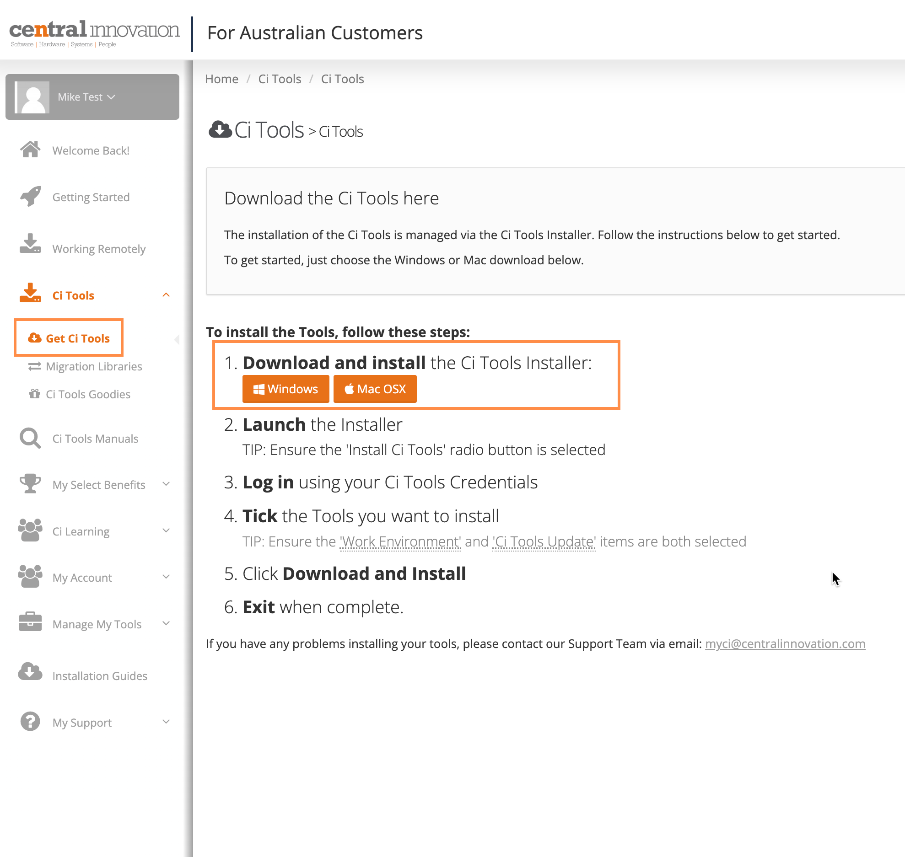
5. 即开始下载 Ci Installer，之后用它来安装所有工具。
第 2 步：运行安装器
1. 找到下载好的 Ci Installer（通常在「下载」文件夹中），然后运行：
Windows 用户
a) 双击 Ci Installer.exe 文件安装 Ci Installer。
b) 如果弹出「用户账户控制」对话框询问是否允许此程序更改电脑，点击「是」。
c) 在安装向导中一路点「下一步」，最后点「完成」。
Mac OSX 用户：
a) 双击下载的 Ci Installer.DMG 文件，打开 Ci Installer 窗口：
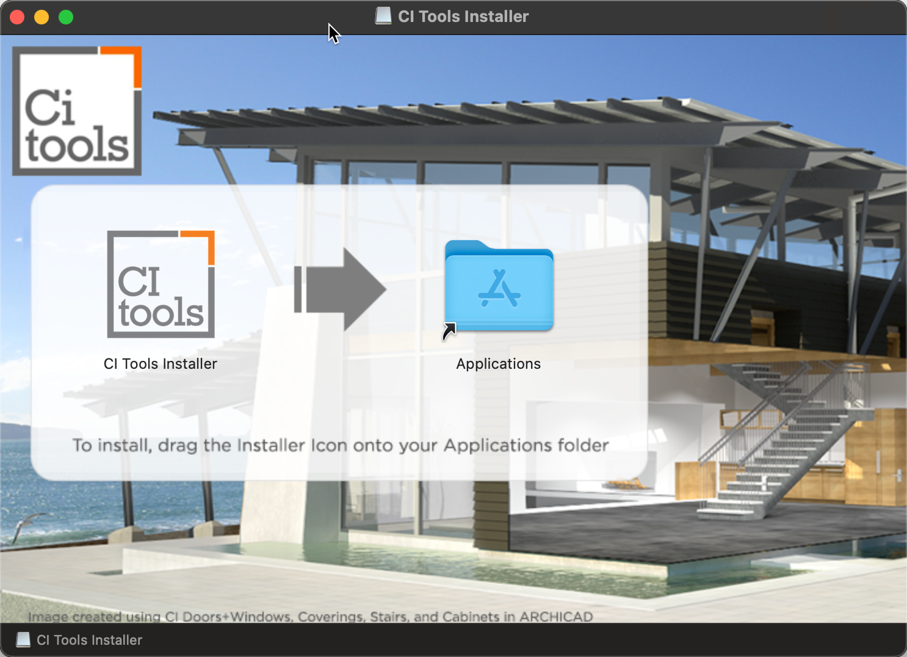
b) 把 Ci Installer 拖入 Applications（应用程序）文件夹。
c) 双击 Applications 文件夹。
d) 双击 Ci Installer 启动工具安装器。
下一篇 - 第 2 步 - 安装 CI Tools
To install the Ci Tools you'll first need to download the Ci Installer.
The installation & updates for Ci Tools is managed by the Ci Installer.
Step 1: Download the Installer
1. First, go to https://myci.centralinnovation.com
2. Log in using your Ci credentials.
3. Choose Ci Tools from the menu on the left, and then click Get Ci Tools
4. Choose either the Windows or Mac OSX buttons to start the download
5. This will begin downloading the Ci Installer, which you will then use to install all of your Tools.
Step 2: Run the Installer
1. Locate the downloaded Ci Installer (typically in your Downloads folder), and then run it:
Windows Users
a) Double click the Ci Installer.exe file to install the Ci Installer
b) If a User Account Control dialog comes up asking if you want to allow the installer to make changes to your computer, click Yes
c) Click through Next through the install wizard, and then Finish.
Mac OSX Users:
a) Double Click your downloaded Ci Installer.DMG file to open the Ci Installer window:
b) Drag the Ci Installer into the Applications folder.
c) Double click the Applications folder.
d) Double click the Ci Installer to launch the Tools Installer.
Next - Step 2 - Install the CI Tools
英文原文对照Official English Original
To install the Ci Tools you'll first need to download the Ci Installer.
The installation & updates for Ci Tools is managed by the Ci Installer.
Step 1: Download the Installer
1. First, go to https://myci.centralinnovation.com
2. Log in using your Ci credentials.
3. Choose Ci Tools from the menu on the left, and then click Get Ci Tools
4. Choose either the Windows or Mac OSX buttons to start the download
5. This will begin downloading the Ci Installer, which you will then use to install all of your Tools.
Step 2: Run the Installer
1. Locate the downloaded Ci Installer (typically in your Downloads folder), and then run it:
Windows Users
a) Double click the Ci Installer.exe file to install the Ci Installer
b) If a User Account Control dialog comes up asking if you want to allow the installer to make changes to your computer, click Yes
c) Click through Next through the install wizard, and then Finish.
Mac OSX Users:
a) Double Click your downloaded Ci Installer.DMG file to open the Ci Installer window:
b) Drag the Ci Installer into the Applications folder.
c) Double click the Applications folder.
d) Double click the Ci Installer to launch the Tools Installer.
Next - Step 2 - Install the CI Tools
认识 Ci Tools 安装器
Getting to know the Ci Tools Installer
Cadimage Installer（安装器）负责 Cadimage 工具的安装与更新。
安装器里有 3 个选项：
- 安装 Cadimage 工具（Install Cadimage Tools）；
- 创建离线安装文件（Create an Offline Install File）；
- 重置安装设置（Reset Installation Settings）。
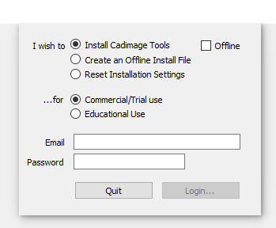
安装 Ci Tools
详细步骤见：Install the Ci Tools
创建离线安装文件
有时你可能需要把一组工具装到没有互联网的电脑上，或者只是想在多台电脑上批量快速安装。
这时可以用离线安装文件（Offline Install File）。
- 在一台已装好所需工具的电脑上，启动 Cadimage Installer。
- 选择 Create Offline Install File 选项，然后按 Create File。
- 为离线安装包选择保存位置和文件名。
- 你会看到一份与「安装/更新」时类似的清单。先选好需要的 ArchiCAD 版本，再逐个点要打包的工具旁的 Add（或直接点 Add All 全选）。
- 加完后，点安装器右上角的 Save 按钮。
- 然后点 Quit 退出安装器。
把离线安装包拷贝到目标电脑上，然后运行安装器：
- 勾选 Offline 复选框，然后按 Open Install File 按钮。
- 选择刚才拷贝过来的离线安装文件。
- 按上文第 3 部分介绍的同样方式安装所需工具。
重置安装设置
如果你的安装出了问题，官方支持人员可能会让你用这个选项。
如果他们让你这么做，运行安装器，选择 Reset Installation Settings 选项，按 Reset Settings 按钮，再按 Reset 确认即可。
The Cadimage Installer manages the installation & the updates of the Cadimage Tools.
There are 3 options in the installer:
- Install Cadimage Tools,
- Create and Offline Install File,
- and Reset Installation Settings.
Install Ci Tools
Detailed steps can be found here: Install the Ci Tools
Create an Offline Install File
In some cases, you may want to install a set of tools on a computer that has no internet connection, or you simply want to streamline the installation process to run on multiple computers.
To do this, you can use an Offline Install File.
- On a computer with the tools you want already installed, start the Cadimage Installer
- Select the Create Offline Install File option, and then press Create File
- Choose a location and filename for the offline install package
- You will see a list similar to what you get when Installing or Updating. Making sure to select the ArchiCAD Version you want first, go through the list and click Add next to each tool that you want to include in the package (or choose the Add All button).
- When you have added everything you want, hit the Save button on the top right corner of the installer.
- Then exit the installer by hitting the Quit button
Now copy the offline install package file to the computer/s you want to use it on, and run the installer:
- Make sure the Offline checkbox is checked, and then press the Open Install File button
- Choose the offline install file that you copied previously
- Proceed to install the tools you want in the same way as detailed in Part 3 above
Resetting Installation Settings
If you are experiencing problems with your installation, our support staff may ask you to use this option.
If they have asked you to, simply run the installer, choose the Reset Installation Settings option, hit the Reset Settings button, and then confirm your choice by hitting Reset.
英文原文对照Official English Original
The Cadimage Installer manages the installation & the updates of the Cadimage Tools.
There are 3 options in the installer:
- Install Cadimage Tools,
- Create and Offline Install File,
- and Reset Installation Settings.
Install Ci Tools
Detailed steps can be found here: Install the Ci Tools
Create an Offline Install File
In some cases, you may want to install a set of tools on a computer that has no internet connection, or you simply want to streamline the installation process to run on multiple computers.
To do this, you can use an Offline Install File.
- On a computer with the tools you want already installed, start the Cadimage Installer
- Select the Create Offline Install File option, and then press Create File
- Choose a location and filename for the offline install package
- You will see a list similar to what you get when Installing or Updating. Making sure to select the ArchiCAD Version you want first, go through the list and click Add next to each tool that you want to include in the package (or choose the Add All button).
- When you have added everything you want, hit the Save button on the top right corner of the installer.
- Then exit the installer by hitting the Quit button
Now copy the offline install package file to the computer/s you want to use it on, and run the installer:
- Make sure the Offline checkbox is checked, and then press the Open Install File button
- Choose the offline install file that you copied previously
- Proceed to install the tools you want in the same way as detailed in Part 3 above
Resetting Installation Settings
If you are experiencing problems with your installation, our support staff may ask you to use this option.
If they have asked you to, simply run the installer, choose the Reset Installation Settings option, hit the Reset Settings button, and then confirm your choice by hitting Reset.
第 2 步：安装 CI Tools
Step 2 - Install the CI Tools
开始之前请确认你已具备：
- 已安装 ARCHICAD [相应版本]；
- 已安装 Cadimage Installer（第 1 步 - 安装 Ci Installer）；
- MyCi（https://myci.centralinnovation.com）登录信息；
- 网络连接；
- 以电脑管理员（Admin）身份登录。
Ci Installer 负责安装与更新 Ci Tools。
安装器里有 3 个选项：
- 安装 Ci Tools（Install Ci Tools）；
- 创建离线安装文件（Create an Offline Install File）；
- 重置安装设置（Reset Installation Settings）。
本篇用第一个选项，其余两个的说明见：Getting to know the Ci Installer
安装类型还有两个选项——商业/试用（Commercial/Trial）或教育版（Educational）。选定后安装器的用法完全一样，只需在继续前选对所需类型即可。
开始：
1. 如果 ARCHICAD 正在运行请先关闭，然后从开始菜单（Windows）或 Applications 文件夹（Mac）打开 Ci Installer。
2. 为「Commercial/Trial use」选择「Install Ci Tools」，输入你的 MyCi 账号信息，然后按 Install 按钮。（注意：这不是你的 Graphisoft ID 登录）
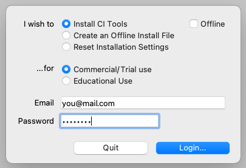
3. 接着会看到可安装的工具清单。窗口上方有几个标签：查看已拥有工具（My Tools）、已装工具的更新（Updates）、可试用 30 天的工具（Trial）。
这些按钮右侧可以选择要安装到哪个 ARCHICAD 版本——支持 Archicad 18 及更新版本。
如果下拉框是空的，点「Find」并选择要装 Ci Tools 的 ARCHICAD [版本] 文件夹。
要安装工具，直接点清单中相应工具右侧的 Install 按钮，或点清单左上角的 Install All 一次装全。
4. Install 按钮旁会出现一个小进度条显示安装进度，装完后该按钮会变成 Uninstall。
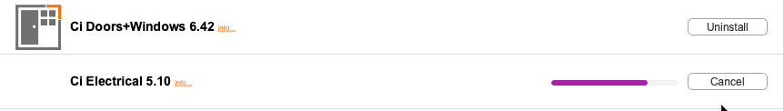
5. 装完所需工具后，点 Close 退出安装器并重启 ARCHICAD。
| 提示：务必安装「Work Environment」和「Ci Update」两个附加模块，它们能让工具运行更顺畅 |
注意：每次运行 Ci Installer 都会自动检查工具更新，安装器自身有新版本时也会自动更新。
下一篇 - 第 3 步 - 应用 Ci Tools 工作环境配置
Before you start please ensure you have:
- ARCHICAD [Version] Installed,
- Cadimage Installer Installed Step 1 - Install the Ci Installer
- MyCi (https://myci.centralinnovation.com) login details,
- Internet Connection,
- You are logged in as the Admin user of your computer.
The Ci Installer manages the installation and updates of the Ci Tools.
There are 3 options in the installer:
- Install Ci Tools,
- Create and Offline Install File,
- and Reset Installation Settings.
For now, we will be using the first option, but details on how others work can be found here: Getting to know the Ci Installer
There are also 2 options for the installation type - Commercial/Trial, or Educational. The actual use of the installer once you've chosen one of these is the same, so just make sure you choose the option you require here before proceeding.
Let's get started:
1. Close ARCHICAD if it’s running and Open the Ci Installer from your Start Menu (Windows), or Applications folder (Mac).
2. Select “Install Ci Tools” For “Commercial/Trial use”, enter your MyCi credentials, and then press the Install button. (please note this is not your Graphisoft ID log in)
3. You will then see a list of the Tools that you can install. Along the top of the window are options to view the tools that you own (My Tools), updates for tools you have installed already (Updates), and tools that you can install 30-day trial versions of (Trial).
To the right of those buttons, you will see an option to choose which version of ARCHICAD to install to - Archicad versions 18 and newer are supported.
If the drop-down is blank, Click ‘Find’ and select the ARCHICAD [version] folder for the ARCHICAD you wish to install the Ci Tools for.
To start installing tools, simply click the Install button to the right of the tool you want in the list, or hit the Install All button at the top left corner of the list to install all the listed tools.
4. A small progress bar will appear next to the Install button to show the installation progress, and then once done, will change to an Uninstall button.
5. Once you've installed everything you need, Exit the installer by clicking the Close button & Restart ARCHICAD
| TIP: Ensure you install the ‘Work Environment’ and ‘Ci Update’ add-ons as these help your Tools run smoothly |
NOTE: The Ci Installer will check for Tool updates whenever you run it, and will also update itself if there is a new version available.
Next - Step 3 - How to apply the Ci Tools Profile.
英文原文对照Official English Original
Before you start please ensure you have:
- ARCHICAD [Version] Installed,
- Cadimage Installer Installed Step 1 - Install the Ci Installer
- MyCi (https://myci.centralinnovation.com) login details,
- Internet Connection,
- You are logged in as the Admin user of your computer.
The Ci Installer manages the installation and updates of the Ci Tools.
There are 3 options in the installer:
- Install Ci Tools,
- Create and Offline Install File,
- and Reset Installation Settings.
For now, we will be using the first option, but details on how others work can be found here: Getting to know the Ci Installer
There are also 2 options for the installation type - Commercial/Trial, or Educational. The actual use of the installer once you've chosen one of these is the same, so just make sure you choose the option you require here before proceeding.
Let's get started:
1. Close ARCHICAD if it’s running and Open the Ci Installer from your Start Menu (Windows), or Applications folder (Mac).
2. Select “Install Ci Tools” For “Commercial/Trial use”, enter your MyCi credentials, and then press the Install button. (please note this is not your Graphisoft ID log in)
3. You will then see a list of the Tools that you can install. Along the top of the window are options to view the tools that you own (My Tools), updates for tools you have installed already (Updates), and tools that you can install 30-day trial versions of (Trial).
To the right of those buttons, you will see an option to choose which version of ARCHICAD to install to - Archicad versions 18 and newer are supported.
If the drop-down is blank, Click ‘Find’ and select the ARCHICAD [version] folder for the ARCHICAD you wish to install the Ci Tools for.
To start installing tools, simply click the Install button to the right of the tool you want in the list, or hit the Install All button at the top left corner of the list to install all the listed tools.
4. A small progress bar will appear next to the Install button to show the installation progress, and then once done, will change to an Uninstall button.
5. Once you've installed everything you need, Exit the installer by clicking the Close button & Restart ARCHICAD
| TIP: Ensure you install the ‘Work Environment’ and ‘Ci Update’ add-ons as these help your Tools run smoothly |
NOTE: The Ci Installer will check for Tool updates whenever you run it, and will also update itself if there is a new version available.
Next - Step 3 - How to apply the Ci Tools Profile.
第 3 步：应用 Ci Tools 工作环境配置
Step 3 - How to apply the Ci Tools Profile.
Work Environment（工作环境配置）会把 Ci 工具的图标加进工具箱，并设置好其他环境选项。不做这一步，你将无法在 ARCHICAD 里使用这些工具。
安装 Ci Tools 时，应一并安装 Ci Work Environment（在 Ci Installer 窗口底部）。
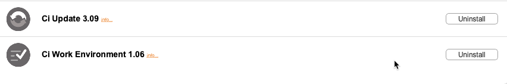
首次启动 ARCHICAD 时设置工作环境：
首次启动 ARCHICAD 时会提示选择工作环境。在已安装的工作环境列表中选择「Ci Tools Profile [版本]」，即可启用 Ci 工作环境。
在 ARCHICAD 内设置或更换工作环境：
安装完成后，进入 Options > Work Environment > Apply Profile > Ci Tools Profile [版本]。
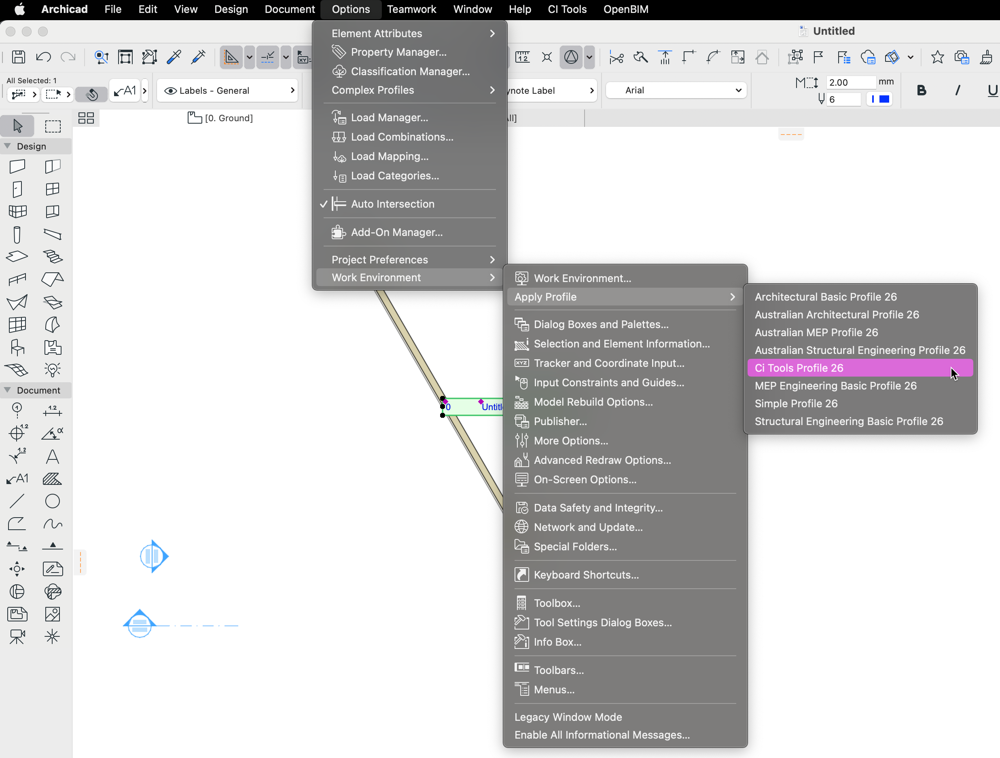
当前工作环境即切换为 Ci Tools Profile [版本]。变化会体现在 ARCHICAD 的工具箱上。
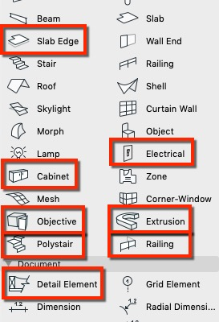
注意：工具箱里只显示你已拥有的工具。Keynotes（规范注释）工具使用的是标注（Label）工具的位置。
下一篇 - 第 4 步 - 激活工具或开始试用
The Work Environment adds the Ci Tool icons to your Toolbox, and sets up some other environmental settings. Without doing this, you won’t be able to access your tools from within ARCHICAD.
When you install the Ci Tools you should also install the Ci Work Environment (At the bottom of the Ci Installer window)
To set up the Work Environment when starting ARCHICAD for the first time:
When starting ARCHICAD for the first time, you will be prompted to select your Work Environment. Simply choose to use the Ci Work Environment by choosing the ‘Ci Tools Profile [version]’ from the installed Work Environment list.
To set up or change the Work Environment from within ARCHICAD:
Once installed in ARCHICAD go to Options> Work Environment> Apply Profile > Ci Tools Profile [Version]
This will set your current Work Environment to Ci Tools Profile [version]. You will see the change reflected in the ARCHICAD Toolbox.
Note: Only the tools you own will show in the toolbox. The Keynote tool uses the Label Tool.
Next - Step 4 - How to apply the Ci Tools Profile.
英文原文对照Official English Original
The Work Environment adds the Ci Tool icons to your Toolbox, and sets up some other environmental settings. Without doing this, you won’t be able to access your tools from within ARCHICAD.
When you install the Ci Tools you should also install the Ci Work Environment (At the bottom of the Ci Installer window)
To set up the Work Environment when starting ARCHICAD for the first time:
When starting ARCHICAD for the first time, you will be prompted to select your Work Environment. Simply choose to use the Ci Work Environment by choosing the ‘Ci Tools Profile [version]’ from the installed Work Environment list.
To set up or change the Work Environment from within ARCHICAD:
Once installed in ARCHICAD go to Options> Work Environment> Apply Profile > Ci Tools Profile [Version]
This will set your current Work Environment to Ci Tools Profile [version]. You will see the change reflected in the ARCHICAD Toolbox.
Note: Only the tools you own will show in the toolbox. The Keynote tool uses the Label Tool.
Next - Step 4 - How to apply the Ci Tools Profile.
第 4 步：激活工具或开始试用
Step 4 - Activating your Tools or Starting a Trial
装好 Ci Tools 并设置完工作环境后，最后一步是激活工具。
第一次使用任何已安装的 Ci 工具时，会弹出这个对话框：
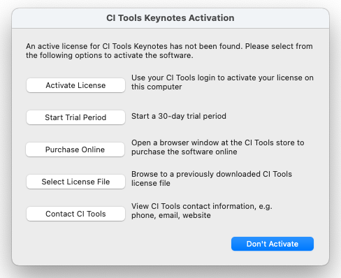
对话框有几个选项，大多数人会用到「激活」或「开始试用」：
- 如果你是已有 Ci Tools 用户（Ci Tools 订阅或永久授权），或新西兰/澳大利亚 Select 客户，选 Activate Licence（激活授权）。
- 如果你还不是 Ci Tools 客户或澳新 Select 客户，多半是想先试用，选 Start Trial Period（开始试用）。
点击 Activate 或 Trial 按钮后会要求登录，输入你的 MyCi 账号信息：
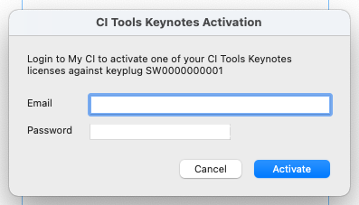
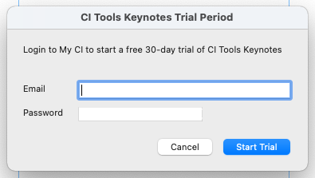
然后点 Activate 或 Start Trial，即可开始使用。
如遇问题，请在 MyCi 的 My Support 下提交支持工单联系我们。
Now that you have the Ci Tools installed and the Work Environment setup, the final step is to Activate your Ci Tools.
When you first try to use any of the Installed Ci Tools, you will be presented with this dialog box:
There are a couple of options available, but for most people, you will want to either Activate or Start a Trial:
- If you are an existing Ci Tools customer (either for a Ci Tools Subscription, or a Ci Tools perpetual license), or an NZ or Australian Select customer, choose the Activate Licence option.
- If you are not currently a Ci Tools customer or an AUS or NZ Select customer, you will likely be here to Try out the Ci Tools, so choose the Start Trial Period option.
Once you click either the Activate or Trial buttons, you will be asked for your Login, so just enter your MyCi Login details here:
And then hit either Activate or Start Trial - that will get you up and running.
If you have any trouble with either, please contact us by logging a support ticket on MyCi under My Support
英文原文对照Official English Original
Now that you have the Ci Tools installed and the Work Environment setup, the final step is to Activate your Ci Tools.
When you first try to use any of the Installed Ci Tools, you will be presented with this dialog box:
There are a couple of options available, but for most people, you will want to either Activate or Start a Trial:
- If you are an existing Ci Tools customer (either for a Ci Tools Subscription, or a Ci Tools perpetual license), or an NZ or Australian Select customer, choose the Activate Licence option.
- If you are not currently a Ci Tools customer or an AUS or NZ Select customer, you will likely be here to Try out the Ci Tools, so choose the Start Trial Period option.
Once you click either the Activate or Trial buttons, you will be asked for your Login, so just enter your MyCi Login details here:
And then hit either Activate or Start Trial - that will get you up and running.
If you have any trouble with either, please contact us by logging a support ticket on MyCi under My Support
如何获取 30 天试用版
How do I get a Trial Version?
请先在此注册或登录：Ci Tools - Free 30-day Trial（centralinnovation.com）
注册并下载安装器后，运行它！
1. 选择 Install CI Tools。
2. 选择 Commercial / Trial Use。
3. 点击 Install。
可能会要求输入登录信息。如出现提示，输入你的 https://myci.centralinnovation.com 账号信息，然后按 Login 按钮。（注意：这不是你的 Graphisoft ID 登录）
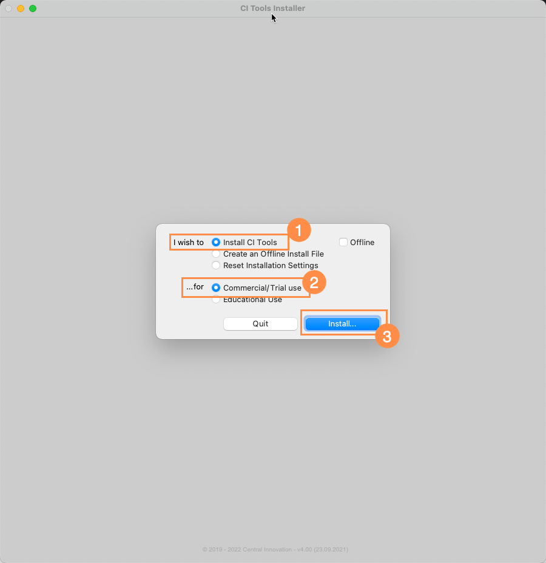
4. 选择 Trial 标签。
5. 选择你的 Archicad 版本。
6. 在想试用的工具旁点 Install；想全部试用就点 Install All。
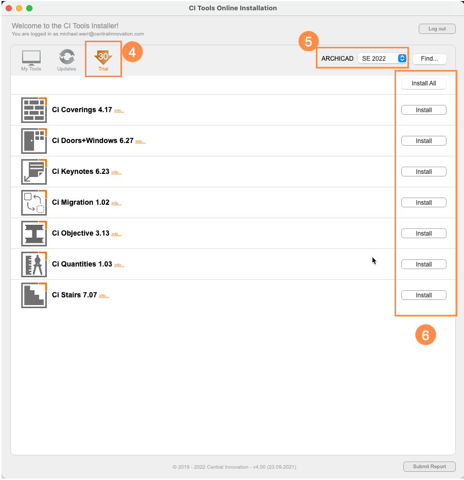
Please register or sign-in here; Ci Tools - Free 30-day Trial (centralinnovation.com)
Once registered and you have downloaded the installer, run it!
1. Select Install CI Tools
2. Select Commercial / Trial Use
3. Click Install
You may be asked to enter your login credentials.
If prompted, enter your https://myci.centralinnovation.com credentials, and then press the Login button. (please note this is not your Graphisoft ID log in)
4. Select Trial
5. Select your Archicad version.
6. Click Install next to the Tools you want to try. If you want to try them all, Click Install All.
英文原文对照Official English Original
Please register or sign-in here; Ci Tools - Free 30-day Trial (centralinnovation.com)
Once registered and you have downloaded the installer, run it!
1. Select Install CI Tools
2. Select Commercial / Trial Use
3. Click Install
You may be asked to enter your login credentials.
If prompted, enter your https://myci.centralinnovation.com credentials, and then press the Login button. (please note this is not your Graphisoft ID log in)
4. Select Trial
5. Select your Archicad version.
6. Click Install next to the Tools you want to try. If you want to try them all, Click Install All.
电脑上已有 Cadimage 安装器时如何安装工具
How to: Install the Cadimage Tools if you already have the Cadimage Installer on your computer
1. 启动 Cadimage Installer
- Windows 用户在：C 盘 > Program files > Cadimage Installer；
- Mac 用户在：Applications 里的 Cadimage Installer。
2. 如有提示则登录。
3. 在下拉框中选择 ARCHICAD 版本。
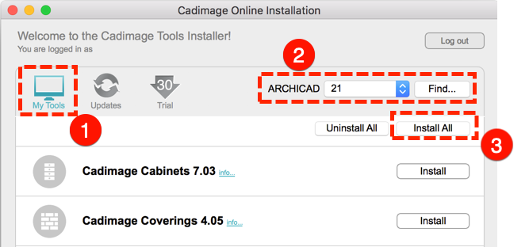
4. 点击 Download and Install。
5. 点击 Close。
6. 登录 myCadimage。
7. 进入 Cadimage Tools > Get Cadimage Tools。
8. 下载并安装 ARCHICAD 用的 Cadimage Work Environment（这一步非常重要——它把工具加进 ARCHICAD 菜单，不装就无法使用这些工具）。
提示：每次运行 Cadimage Installer 都会自动检查工具更新，安装器自身有新版本时也会自动更新。
1. Launch the Cadimage Installer
- Windows users will find it in: C > Program files > Cadimage Installer;
- Mac users will find it in: Applications: Cadimage Installer
2. Login if prompted
3. Choose the ARCHICAD version from the drop-down selector
4. Click Download and Install
5. Click Close
6. Log in to myCadimage
7. Go to Cadimage Tools > Get Cadimage Tools
8. Download and Install the Cadimage Work Environment for ARCHICAD (this step is very important as adds the tools to your ARCHICAD menus and without it, you won’t be able to access the tools).
TIP: The Cadimage Installer will check for Tool updates whenever you run it, and will also update itself if there is a new version available.
英文原文对照Official English Original
1. Launch the Cadimage Installer
- Windows users will find it in: C > Program files > Cadimage Installer;
- Mac users will find it in: Applications: Cadimage Installer
2. Login if prompted
3. Choose the ARCHICAD version from the drop-down selector
4. Click Download and Install
5. Click Close
6. Log in to myCadimage
7. Go to Cadimage Tools > Get Cadimage Tools
8. Download and Install the Cadimage Work Environment for ARCHICAD (this step is very important as adds the tools to your ARCHICAD menus and without it, you won’t be able to access the tools).
TIP: The Cadimage Installer will check for Tool updates whenever you run it, and will also update itself if there is a new version available.
重置工具安装设置
How to: Reset the Tools Installation Settings
如果你的安装出了问题，官方支持人员可能会让你用这个选项。
如果他们让你这么做，运行安装器，选择 Reset Installation Settings 选项，点 Reset Settings 按钮，再点 Reset 确认即可。
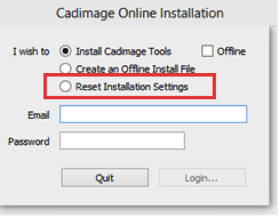
If you are experiencing problems with your installation, our support staff may ask you to use this option.
If they have asked you to, simply run the installer, choose the Reset Installation Settings option, click the Reset Settings button, and then confirm your choice by clicking Reset.
英文原文对照Official English Original
If you are experiencing problems with your installation, our support staff may ask you to use this option.
If they have asked you to, simply run the installer, choose the Reset Installation Settings option, click the Reset Settings button, and then confirm your choice by clicking Reset.
创建离线安装文件
How to create an Offline Installation File
有时你可能需要把一组工具装到没有互联网的电脑上，或者只是想在多台电脑上批量快速安装。
这个过程要先在一台有网的电脑上开始。
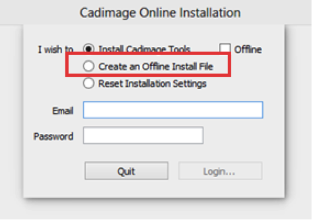
第 1 阶段：在联网电脑上创建离线文件
- 在一台已装好所需工具的电脑上，启动 Cadimage Installer。
- 选择 Create Offline Install File 选项。
- 点击 Create File。
- 为离线安装包选择保存位置和文件名。
- 选择工具要配用的 ARCHICAD 版本。
- 接着会看到工具清单——逐个点想打包工具旁的「Add」（或点 Add All 全选）。
- 点安装器右上角的 Save 按钮。
- 点 Quit 按钮。
- 从 myCadimage.com 下载一份 Cadimage Installer 和 Work Environment。
- 把 Installer、Work Environment 和离线安装包文件一起拷贝到目标电脑。
第 2 阶段：在离线电脑上
- 安装 Cadimage Installer。
- 安装 Cadimage Work Environment。
- 启动 Cadimage Installer。
- 出现提示时，确认「Install Cadimage Tools」和「Offline」都处于勾选状态。
- 点击 Open Install File 按钮。
- 找到之前拷贝过来的离线安装文件。
- 选择要安装的工具。
- 完成后退出安装器。
In some cases, you may want to install a set of tools on a computer that has no Internet connection, or you simply want to streamline the installation process to run on multiple computers.
You’ll need to start the process on a computer with an Internet connection first.
Stage 1: Create the offline file on an online computer
- On a computer with the tools you want already installed, start the Cadimage Installer
- Select the Create Offline Install File option
- Click Create File
- Choose a location and filename for the offline install package
- Select the ARCHICAD version you will be using with the Tools
- You will see a list of tools - go through the list and click ‘Add’ next to each tool that you want to include in the package (or choose the Add All button)
- Click the Save button on the top right corner of the installer
- Click the Quit button
- Download a copy of the Cadimage Installer and Work Environment from myCadimage.com
- Copy the Installer, Work Environment and the Offline installation package file to the computer/s you want to use it on.
Stage 2: On the offline computer
- Install the Cadimage Installer
- Install the Cadimage Work Environment
- Launch the Cadimage Installer
- When prompted, ensure ‘Install Cadimage Tools’ and ‘Offline’ are both selected
- Click the Open Install File button
- Locate the offline install file that you copied previously
- Choose the Tools you wish to install
- Once complete, Exit out of the Installer.
英文原文对照Official English Original
In some cases, you may want to install a set of tools on a computer that has no Internet connection, or you simply want to streamline the installation process to run on multiple computers.
You’ll need to start the process on a computer with an Internet connection first.
Stage 1: Create the offline file on an online computer
- On a computer with the tools you want already installed, start the Cadimage Installer
- Select the Create Offline Install File option
- Click Create File
- Choose a location and filename for the offline install package
- Select the ARCHICAD version you will be using with the Tools
- You will see a list of tools - go through the list and click ‘Add’ next to each tool that you want to include in the package (or choose the Add All button)
- Click the Save button on the top right corner of the installer
- Click the Quit button
- Download a copy of the Cadimage Installer and Work Environment from myCadimage.com
- Copy the Installer, Work Environment and the Offline installation package file to the computer/s you want to use it on.
Stage 2: On the offline computer
- Install the Cadimage Installer
- Install the Cadimage Work Environment
- Launch the Cadimage Installer
- When prompted, ensure ‘Install Cadimage Tools’ and ‘Offline’ are both selected
- Click the Open Install File button
- Locate the offline install file that you copied previously
- Choose the Tools you wish to install
- Once complete, Exit out of the Installer.
Ci Tools 托管部署指南（多机批量安装）
Ci Tools Managed Install Guide
虽然无法通过 CI Tools Installer 应用做静默安装，但在无法安装和运行 CI Tools Installer 的多台电脑上分发工具及其更新，有一个可行的办法。
如果你想为 Archicad 做静默/托管安装，请先阅读下面的指南：
安装：
按以下步骤安装并手动部署 CI Tools。
1) 在一台不受管理的电脑上安装 CI Tools 插件：
a) 如果 Archicad 开着，先关闭。
b) 运行 Ci Tools Installer，安装用户需要访问的全部工具/工具更新。
c) 退出安装器。
d) 进入 Archicad 安装文件夹，其中 ## 代表 Archicad 版本号：
Windows：
C:\Program Files\Graphisoft\ARCHICAD ##\
macOS：
/Applications/Graphisoft/ARCHICAD ##/
e) 然后复制以下文件和子文件夹，并记下相对路径：
...\ARCHICAD ##\
复制名为 CI Tools Extras 的文件夹。
...\ARCHICAD ##\Add-Ons\
复制名为 CI Tools 的文件夹。
...\ARCHICAD ##\ARCHICAD Library ##\
复制名为 CI Tools Library ## 的文件夹。
...\ARCHICAD ##\Defaults\ARCHICAD\WorkEnvironment\Profiles
复制名为 Ci Tools Profile ##.xml 的文件。
...\ARCHICAD ##\Defaults\ARCHICAD\WorkEnvironment\Tools
复制名为 Ci Tools Toolbox ##.xml 的文件。
（如果使用 Archicad 28 或更高版本，还要：）
...\ARCHICAD ##\
复制名为 CI Tools Library Packages 的文件夹。
2) 把工具部署到用户电脑：
用你喜欢的方式，把 CI Tools Extras、CI Tools 和 CI Library ## 文件夹以及两个 .xml 文件，拷贝到用户电脑上对应的目录。
CI Tools Library ## 文件夹（存放 CI Tools 库文件）默认包含在 Archicad Library ## 文件夹内，会随默认 Archicad 库自动加载。
CI Tools 文件夹必须始终拷入 Archicad 安装目录内的 Add-Ons 文件夹，这是 Archicad 检测插件的必要条件。
3) 在 BIMcloud 上上传/更新库：
由于 CI Tools 库默认装在 Archicad Library ## 文件夹内，在 BIMcloud 服务器上安装或更新 CI Tools 库最可靠的办法，是用一台已装好最新工具的本地副本替换服务器上存储的「Archicad Library ##」库。不用 BIMcloud 的话可跳过此步。
a) 请所有人发送并接收更改、并「退出团队协作项目」。
这样可确保不影响任何人的库。
b) 从其中一台本地电脑更新 BIMcloud 库：
要替换库，打开 File ➔ Libraries and Objects ➔ Manage BIMcloud Libraries… 窗口。
在这里选中并删除服务器上的「Archicad Library ##」库。
然后点「Upload a local library…」按钮。
再从 Archicad 安装目录中选中 Archicad Library ## 文件夹。
库上传完成后，在 Library Manager 里「Reload & Apply」库。
更多信息见：
c) 请所有用户清空本地团队协作数据（Local Teamwork Data）。
这样他们就不必在每个项目里重复加载更新后的库。
更多信息见：
完成后，用户即可重新加入各自的项目。
更新：
更新已部署的安装、或电脑上已有旧版 CI Tools 时，强烈建议清空库缓存（Library Cache）。
方法是删除以下文件夹，其中 ## 代表 Archicad 版本号、*** 是本地化代码：
Windows：
C:\Users\[用户名]\Appdata\Local\Graphisoft\ArchiCAD-64 Cache Folder\AC ##.0.0 *** v1
注意：
AppData 文件夹默认隐藏。显示隐藏文件和文件夹的方法见：
或者直接把 %appdata%\..\ 粘贴到文件资源管理器地址栏后按「Enter」。
macOS：
~/Library/Caches/GRAPHISOFT/Archicad Cache Folder/AC ##.0.0 *** v1
注意：
~/Library 文件夹默认隐藏。浏览 ~/Library 文件夹的方法：
- 在 Finder 顶部菜单栏选 前往 ➔ 前往文件夹...。
- 输入「~/Library」。
- 点「前往」即可进入 Library 文件夹。
也可以在「前往文件夹」窗口按住 opt⌥ 让 ~/Library 出现在列表中，或在 Finder 里按 cmd⌘ + shift⇧ + .（句号）显示隐藏文件夹。
举例：清空新西兰版 Archicad 26 的库缓存，要删除的文件夹是：
%appdata%\..\Local\Graphisoft\ArchiCAD-64 Cache Folder\AC 26.0.0 NZE v1
（Windows），以及：
~/Library/Caches/GRAPHISOFT/Archicad Cache Folder/AC 26.0.0 NZE v1
（Mac）。
附加：
如果这次部署用于教室环境，学生们可能对我们的AEC Tip of the Day（每日贴士）感兴趣。每日贴士可以收藏为书签，或设为主页。
每日贴士还可以设为启动 Archicad 时自动打开。详见：
While a silent install for the CI Tools is not possible through the CI Tools Installer app, there is a workable method of distributing the tools, and their updates, to multiple computers where installing and operating the CI Tools Installer is not possible.
If you would like to perform a silent/managed install for Archicad, please read the guide linked below:
Installation:
Please see the instructions below for the steps required to install and then manually deploy the CI Tools.
1) Install the CI Tools add-ons on an unmanaged machine:
a) Close Archicad if it is open.
b) Run the Ci Tools Installer, and install all tools/updates to tools that should be accessible to the users.
c) Quit the installer.
d) Navigate to the Archicad Install folder, where ## stands for the Archicad version:
Windows:
C:\Program Files\Graphisoft\ARCHICAD ##\
macOS:
/Applications/Graphisoft/ARCHICAD ##/
e) Then copy the following files and subfolders, making note of the relative file path:
...\ARCHICAD ##\
copy the folder called \CI Tools Extras.
...\ARCHICAD ##\Add-Ons\
copy the folder called \CI Tools.
...\ARCHICAD ##\ARCHICAD Library ##\
copy the folder called \CI Tools Library ##.
...\ARCHICAD ##\Defaults\ARCHICAD\WorkEnvironment\Profiles
copy the file called \Ci Tools Profile ##.xml.
...\ARCHICAD ##\Defaults\ARCHICAD\WorkEnvironment\Tools
copy the file called \Ci Tools Toolbox ##.xml.
(and if using Archicad 28 or later):
...\ARCHICAD ##\
copy the folder called \CI Tools Library Packages.
2) Deploy the tools to the user’s machine(s):
Copy the CI Tools Extras, CI Tools and CI Library ## folders and the two .xml files, using your preferred method, to the appropriate directories on the user’s machines.
The CI Tools Library ## folder where the CI Tools Library files are located, is contained in the Archicad Library ## folder by default, and will be loaded automatically with the default Archicad Library.
The CI Tools folder must always be copied into to the Add-Ons folder inside the Archicad install directory, this is necessary for Archicad to detect the add-ons.
3) Upload/update the libraries on BIMcloud:
Since the CI Tools Libraries are installed inside the Archicad Library ## folder by default, the most reliable method to install or update the CI Tools Libraries on the BIMcloud server is to replace the 'Archicad Library ##' library stored there with a local copy that has the updated Tools already installed. If you do not use BIMcloud you may skip this step.
a) Ask everyone to send and receive and 'leave the teamwork projects'.
This way you can make sure that this won’t affect anyone’s libraries.
b) Update the BIMcloud library from one of the local machines:
To replace the Library, open the File ➔ Libraries and Objects ➔ Manage BIMcloud Libraries… window.
From here, you can select and delete the ‘Archicad Library ##‘ library from the server.
Then, click the ‘Upload a local library…‘ button.
Then select the Archicad Library ## folder from inside your Archicad install directory.
Once the library has uploaded, 'Reload & Apply' the libraries from the Library Manager.
See the link below for more information:
c) Ask all users to clear their Local Teamwork Data.
This way they will not have to reload the updated library for each project.
See the link below for more information:
Once this is done, the users can re-join their projects.
Updating:
When updating a deployed Installation, or where there is an existing version of the CI Tools installed, it is strongly recommended to clear the Library Cache.
This can be done by deleting the following folder, where ## stands for the Archicad version and *** is the localisation code:
Windows:
C:\Users\[username]\Appdata\Local\Graphisoft\ArchiCAD-64 Cache Folder\AC ##.0.0 *** v1
Note:
The AppData folder is hidden by default. To show hidden files and folders please see the article at the link below:
Or simply copy and paste %appdata%\..\ into the address bar in File Explorer then hit 'Enter' on your keyboard.
macOS:
~/Library/Caches/GRAPHISOFT/Archicad Cache Folder/AC ##.0.0 *** v1
Note:
The ~/Library folder is hidden by default. To browse the ~/Library folder:
- In Finder choose Go ➔ Go To Folder... from the top menu bar.
- Type "~/Library"
- Click 'GO' to navigate to the Library folder
You can also press opt⌥ from the 'Go To Folder' window to show ~/Library on the list, or press cmd⌘ + shift⇧ + . (period) in Finder to show hidden folders.
As an example, to clear the library cache for the New Zealand version of Archicad 26, you would delete the folder:
%appdata%\..\Local\Graphisoft\ArchiCAD-64 Cache Folder\AC 26.0.0 NZE v1
...on windows, and:
~/Library/Caches/GRAPHISOFT/Archicad
Cache Folder/AC 26.0.0 NZE v1
...on a Mac.
Extras:
If this deployment is for a classroom environment, students may be interested in our AEC Tip of the Day. The Tip of the Day can be saved as a favourite, or set as the home page.
The Tip of the Day can be set to open when starting Archicad. You can read more about it at the link below:
英文原文对照Official English Original
While a silent install for the CI Tools is not possible through the CI Tools Installer app, there is a workable method of distributing the tools, and their updates, to multiple computers where installing and operating the CI Tools Installer is not possible.
If you would like to perform a silent/managed install for Archicad, please read the guide linked below:
Installation:
Please see the instructions below for the steps required to install and then manually deploy the CI Tools.
1) Install the CI Tools add-ons on an unmanaged machine:
a) Close Archicad if it is open.
b) Run the Ci Tools Installer, and install all tools/updates to tools that should be accessible to the users.
c) Quit the installer.
d) Navigate to the Archicad Install folder, where ## stands for the Archicad version:
Windows:
C:\Program Files\Graphisoft\ARCHICAD ##\
macOS:
/Applications/Graphisoft/ARCHICAD ##/
e) Then copy the following files and subfolders, making note of the relative file path:
...\ARCHICAD ##\
copy the folder called \CI Tools Extras.
...\ARCHICAD ##\Add-Ons\
copy the folder called \CI Tools.
...\ARCHICAD ##\ARCHICAD Library ##\
copy the folder called \CI Tools Library ##.
...\ARCHICAD ##\Defaults\ARCHICAD\WorkEnvironment\Profiles
copy the file called \Ci Tools Profile ##.xml.
...\ARCHICAD ##\Defaults\ARCHICAD\WorkEnvironment\Tools
copy the file called \Ci Tools Toolbox ##.xml.
(and if using Archicad 28 or later):
...\ARCHICAD ##\
copy the folder called \CI Tools Library Packages.
2) Deploy the tools to the user’s machine(s):
Copy the CI Tools Extras, CI Tools and CI Library ## folders and the two .xml files, using your preferred method, to the appropriate directories on the user’s machines.
The CI Tools Library ## folder where the CI Tools Library files are located, is contained in the Archicad Library ## folder by default, and will be loaded automatically with the default Archicad Library.
The CI Tools folder must always be copied into to the Add-Ons folder inside the Archicad install directory, this is necessary for Archicad to detect the add-ons.
3) Upload/update the libraries on BIMcloud:
Since the CI Tools Libraries are installed inside the Archicad Library ## folder by default, the most reliable method to install or update the CI Tools Libraries on the BIMcloud server is to replace the 'Archicad Library ##' library stored there with a local copy that has the updated Tools already installed. If you do not use BIMcloud you may skip this step.
a) Ask everyone to send and receive and 'leave the teamwork projects'.
This way you can make sure that this won’t affect anyone’s libraries.
b) Update the BIMcloud library from one of the local machines:
To replace the Library, open the File ➔ Libraries and Objects ➔ Manage BIMcloud Libraries… window.
From here, you can select and delete the ‘Archicad Library ##‘ library from the server.
Then, click the ‘Upload a local library…‘ button.
Then select the Archicad Library ## folder from inside your Archicad install directory.
Once the library has uploaded, 'Reload & Apply' the libraries from the Library Manager.
See the link below for more information:
c) Ask all users to clear their Local Teamwork Data.
This way they will not have to reload the updated library for each project.
See the link below for more information:
Once this is done, the users can re-join their projects.
Updating:
When updating a deployed Installation, or where there is an existing version of the CI Tools installed, it is strongly recommended to clear the Library Cache.
This can be done by deleting the following folder, where ## stands for the Archicad version and *** is the localisation code:
Windows:
C:\Users\[username]\Appdata\Local\Graphisoft\ArchiCAD-64 Cache Folder\AC ##.0.0 *** v1
Note:
The AppData folder is hidden by default. To show hidden files and folders please see the article at the link below:
Or simply copy and paste %appdata%\..\ into the address bar in File Explorer then hit 'Enter' on your keyboard.
macOS:
~/Library/Caches/GRAPHISOFT/Archicad Cache Folder/AC ##.0.0 *** v1
Note:
The ~/Library folder is hidden by default. To browse the ~/Library folder:
- In Finder choose Go ➔ Go To Folder... from the top menu bar.
- Type "~/Library"
- Click 'GO' to navigate to the Library folder
You can also press opt⌥ from the 'Go To Folder' window to show ~/Library on the list, or press cmd⌘ + shift⇧ + . (period) in Finder to show hidden folders.
As an example, to clear the library cache for the New Zealand version of Archicad 26, you would delete the folder:
%appdata%\..\Local\Graphisoft\ArchiCAD-64 Cache Folder\AC 26.0.0 NZE v1
...on windows, and:
~/Library/Caches/GRAPHISOFT/Archicad
Cache Folder/AC 26.0.0 NZE v1
...on a Mac.
Extras:
If this deployment is for a classroom environment, students may be interested in our AEC Tip of the Day. The Tip of the Day can be saved as a favourite, or set as the home page.
The Tip of the Day can be set to open when starting Archicad. You can read more about it at the link below:
在 Archicad 内检查更新
How to check for updates
你可能已经注意到，Cadimage Installer 随工具一起装了一个名为「Cadimage Update」的附加模块，它让你可以在 ARCHICAD 内部检查更新。
方法是：进入 Cadimage 菜单，选择 myCadimage > Check for Updates：
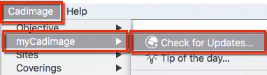
如果工具已是最新，会看到如下提示：
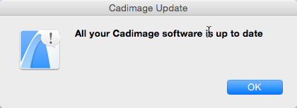
如果工具不是最新，电脑会提示你打开 Cadimage Installer 搜索并安装更新。
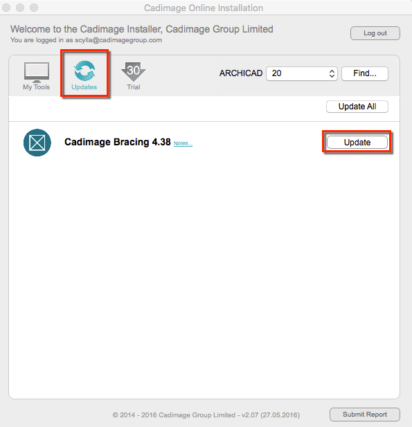
You may have noticed that the Cadimage Installer has an add-on called ‘Cadimage Update’ which is installed with the rest of your Tools. This allows you to check for updates from within ARCHICAD.
To do this, go to the Cadimage Menu and select myCadimage>Check for Updates:
If your tools are up to date, you will see the following message:
If your tools are not up to date, your computer will prompt you to open the Cadimage Installer to search for and install the updates.
英文原文对照Official English Original
You may have noticed that the Cadimage Installer has an add-on called ‘Cadimage Update’ which is installed with the rest of your Tools. This allows you to check for updates from within ARCHICAD.
To do this, go to the Cadimage Menu and select myCadimage>Check for Updates:
If your tools are up to date, you will see the following message:
If your tools are not up to date, your computer will prompt you to open the Cadimage Installer to search for and install the updates.
通过安装器更新工具
Updating the Tools
如果工具已经装好，只需运行 Ci Tool Installer 即可更新。
登录 Ci Tool Installer 后，点界面上方的 Update 标签，就能看到可用更新列表。
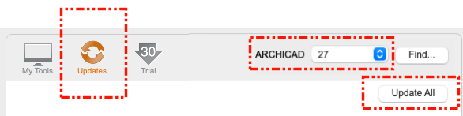
与安装过程类似：按各工具旁的 Update 按钮只装想要的更新，或按 Update All 一键全部更新。
完成后点 Close 退出安装器即可。
If you already have the tools installed, you can update them by simply running the Ci Tool Installer.
Login into the Ci Tool Installer and then click on the Update button in the upper row of the interface. You will then see a list of updates that are available for you.
Similarly to the install process, you can then press the Update button to install any updates that you want, or hit the Update All button to install them all in one go.
Once the process is complete, just exit the installer by clicking the Close button.
英文原文对照Official English Original
If you already have the tools installed, you can update them by simply running the Ci Tool Installer.
Login into the Ci Tool Installer and then click on the Update button in the upper row of the interface. You will then see a list of updates that are available for you.
Similarly to the install process, you can then press the Update button to install any updates that you want, or hit the Update All button to install them all in one go.
Once the process is complete, just exit the installer by clicking the Close button.
设置「每日贴士」偏好
Change Tip of the Day Preferences
安装 Ci Tools 后你会发现，每次启动 ARCHICAD 时会弹出一条「Archicad 每日贴士」（Tip of the Day），可以选择在浏览器里查看该条贴士。
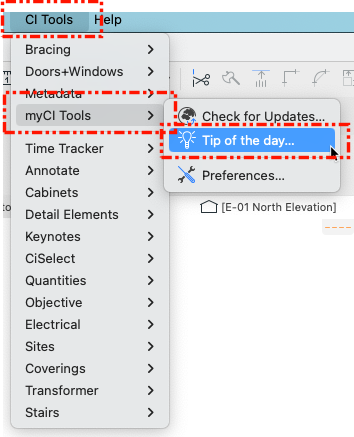
装好工具后首次启动 ARCHICAD 时，会看到这条信息：
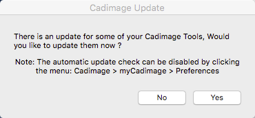
如果想更改查看偏好（即打开或关闭每日贴士）：
1. 在 ARCHICAD 中选择 Ci Tools > MyCi Tools > Preferences：
2. 按需勾选或取消「Display Tip of the Day at Launch」（启动时显示每日贴士）选项：
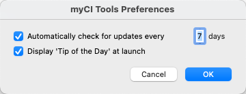
When you install the Ci Tools, you will notice that you’ll get an Archicad Tip of the Day when you launch ARCHICAD. You’ll have the option of viewing the Tip in your Internet browser.
When you first launch ARCHICAD with the Tools installed, you'll get this message:
If you want to change your viewing preferences (ie, to turn the Tips on or off):
1. In ARCHICAD, choose Ci Tools > MyCi Tools > Preferences:
2. Check or uncheck the ‘Display Tip of the Day at Launch’ option as preferred:
英文原文对照Official English Original
When you install the Ci Tools, you will notice that you’ll get an Archicad Tip of the Day when you launch ARCHICAD. You’ll have the option of viewing the Tip in your Internet browser.
When you first launch ARCHICAD with the Tools installed, you'll get this message:
If you want to change your viewing preferences (ie, to turn the Tips on or off):
1. In ARCHICAD, choose Ci Tools > MyCi Tools > Preferences:
2. Check or uncheck the ‘Display Tip of the Day at Launch’ option as preferred:
手动把工具加进工具箱
How to manually add Tools to the Toolbox
先在工具箱的 Design 上右键，选择 Toolbox...
1. 选择 Design 作为要加入工具的工具箱分组。
2. 在 Available Tools（可用工具）区域选中所需工具。
3. 点 Add Selected，把工具加进工具箱的 Design 分组。
4. 点 OK。
工具就会出现在你的工具箱里。
First Right-click on top of Design in the Toolbox and select Toolbox...
1. Select Design as the Toolbox Group you would like to add the tools to
2. Select the tools from the Available Tools area
3. Click on Add Selected to add the Tools to the Design Group in the Toolbox
4. Click OK.
Your tools will now show in your toolbox.
英文原文对照Official English Original
First Right-click on top of Design in the Toolbox and select Toolbox...
1. Select Design as the Toolbox Group you would like to add the tools to
2. Select the tools from the Available Tools area
3. Click on Add Selected to add the Tools to the Design Group in the Toolbox
4. Click OK.
Your tools will now show in your toolbox.
在工具箱中显示 Cadimage / Ci Tools 图标
How to display the Cadimage / Ci Tools icons in the Toobox
最简单的办法是按下图应用 Cadimage Profile。
注意：Cadimage Profile 可在安装 Cadimage 工具时通过 Cadimage Installer 一并安装——点此查看详细步骤
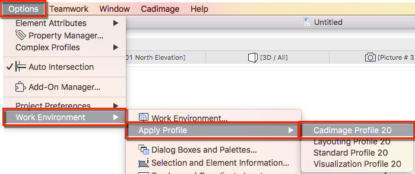
如果你使用自定义 Profile、想手动添加工具，请按以下步骤：
首先在工具箱的 Design 上右键，选择 Toolbox...
1. 选择 Design 作为要加入工具的工具箱分组。
2. 在 Available Tools（可用工具）区域选中相应工具。
3. 点 Add Selected，把工具加进工具箱的 Design 分组。
4. 点 OK。
工具就会出现在你的工具箱里。
The easiest way is to apply the Cadimage Profile as shown below
Note: The Cadimage Profile can be installed from the Cadimage Installer upon Cadimage tools installation. - click for more detailed steps
If you are using a Custom Profile and would like to add the tools manually, please follow these steps:
First, right-click on top of Design in the Toolbox and select Toolbox...
1. Select Design as the Toolbox Group you would like to add the tools to
2. Select the relevant tools from the Available Tools area
3. Click on Add Selected to add the Tools to the Design Group in the Toolbox
4. Click OK.
Your tools will now show in your toolbox.
英文原文对照Official English Original
The easiest way is to apply the Cadimage Profile as shown below
Note: The Cadimage Profile can be installed from the Cadimage Installer upon Cadimage tools installation. - click for more detailed steps
If you are using a Custom Profile and would like to add the tools manually, please follow these steps:
First, right-click on top of Design in the Toolbox and select Toolbox...
1. Select Design as the Toolbox Group you would like to add the tools to
2. Select the relevant tools from the Available Tools area
3. Click on Add Selected to add the Tools to the Design Group in the Toolbox
4. Click OK.
Your tools will now show in your toolbox.
手动卸载 Ci Tools
Manually Uninstall the Ci Tools.
有时因权限问题，Ci Tools Installer 无法覆盖已有文件、更新你的 Ci Tools。
遇到这种情况，最省事的办法通常是先手动卸载工具——过程简单，一两分钟即可。
删完后重新启动 Ci Tools Installer，再次尝试安装即可。
Archicad 29
找到并删除以下文件夹：
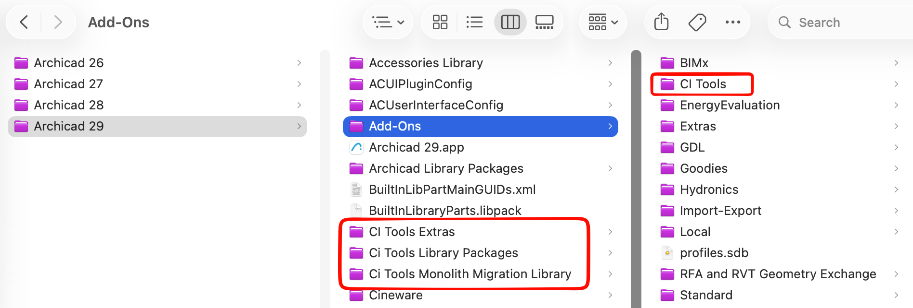
Archicad 28
找到并删除以下文件夹：
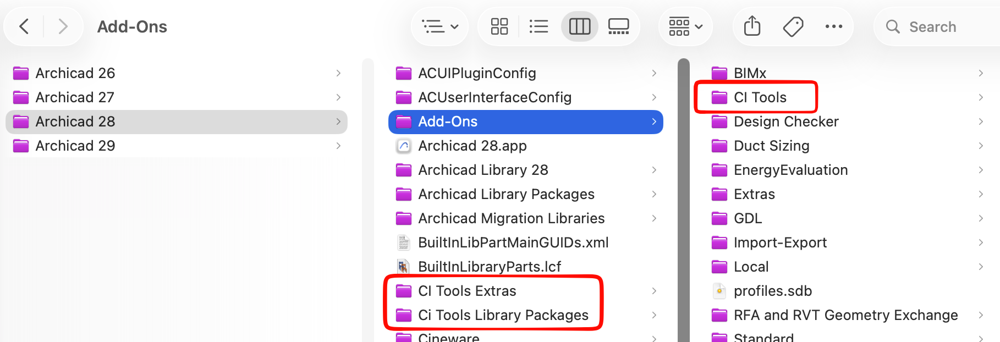
以及：
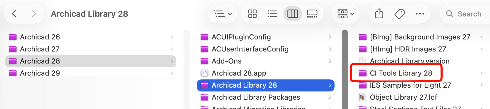
Archicad 27 及更早版本
找到并删除以下文件夹（把版本号换成你在用的版本）：
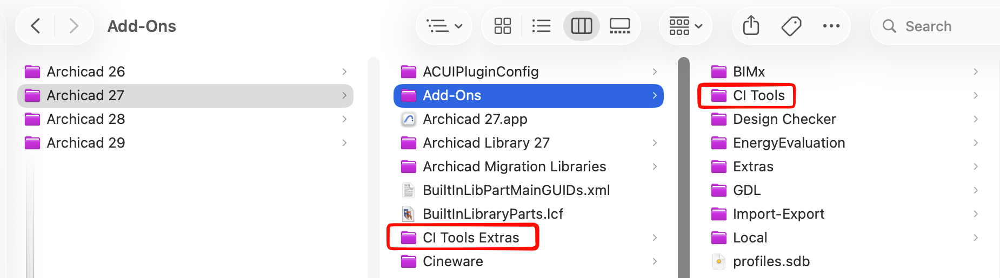
以及：
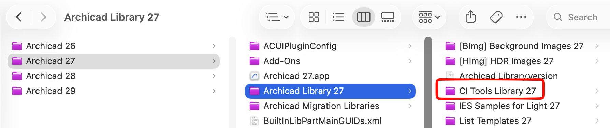
Sometimes the Ci Tools Installer is not able to Update your Ci Tools due to permissions problems overwriting the existing files you have installed
If this happens, the easiest way to get around it is often to do a manual uninstallation of the tools first - the process is simple and only takes a minute or two.
Once you are done, just start the Ci Tools Installer again, and retry the Tools installation
Archicad 29
Find and delete the following Folders:
Archicad 28
Find and delete the following Folders:
and:
Archicad 27 and earlier
Find and delete the following Folders (switch the Version Number for the version you are using):
and:
英文原文对照Official English Original
Sometimes the Ci Tools Installer is not able to Update your Ci Tools due to permissions problems overwriting the existing files you have installed
If this happens, the easiest way to get around it is often to do a manual uninstallation of the tools first - the process is simple and only takes a minute or two.
Once you are done, just start the Ci Tools Installer again, and retry the Tools installation
Archicad 29
Find and delete the following Folders:
Archicad 28
Find and delete the following Folders:
and:
Archicad 27 and earlier
Find and delete the following Folders (switch the Version Number for the version you are using):
and:
Ci Tools 订阅套餐说明
Ci Tool Subsciptions
Ci Tool 订阅套餐（旧版 Legacy）
| Basic （任选两个工具） |
Pro | Premium |
| Annotate | Annotate | |
| Cabinets | Cabinets | Cabinets |
| Covering | Covering | Covering |
| Electrical | Electrical | Electrical |
| Door + Windows | Door + Windows | Door + Windows |
| Keynotes | Keynotes | Keynotes |
| Metadata | Metadata | |
| Objective | Objective | Objective |
| Quantities | Quantities | |
| Stairs | Stairs | Stairs |
| Time Tracker（AC27+） | Time Tracker（AC27+） | Time Tracker（AC27+） |
| Transformer | Transformer |
旧版 Ci Tool 套餐已停售——持有旧订阅的客户可继续使用，直到需要变更（如取消授权）为止。
Ci Tool 订阅套餐（2025 年 10 月起）
| Basic 2 任选两（2）个工具 |
Basic 5 任选五（5）个工具 |
Premium | |
| Annotate | 可选 | 可选 | 包含 |
| Cabinets | 可选 | 可选 | 包含 |
| Coverings | 可选 | 可选 | 包含 |
| Detail Elements | 包含 | ||
| Door + Windows | 可选 | 可选 | 包含 |
| Electrical | 可选 | 可选 | 包含 |
| Fitout（AC28+） | 可选 | 可选 | 包含 |
| Keynotes | 免费附带 | 免费附带 | 免费附带 |
| Metadata | 可选 | 可选 | 包含 |
| Quantities | 可选 | 可选 | 包含 |
| Sites | 包含 | ||
| Stairs | 可选 | 可选 | 包含 |
| Structure | 可选 | 可选 | 包含 |
| Time Tracker | 可选 | 可选 | 包含 |
| Transformer | 可选 | 可选 | 包含 |
| Launch Pad（AC28+） | 免费附带 | 免费附带 | 免费附带 |
| *** Keynotes 与 Launch Pad 在所有套餐中均为免费附带 |
对于协议有效的澳新 Archicad Select 和 Graphisoft FORWARD 客户，会提供一组 Ci Tools，与上述套餐不同。请联系你的客户经理或客服（CSR）确认你有哪些工具。
订购
Ci Tools 订阅 - https://myci.centralinnovation.com/buy
YouTube 频道
https://www.youtube.com/@CiTools/videos
Central Innovation
https://centralinnovation.com/archicad/ci-tools/
每周 Ci Tools 网络研讨会（每周四新西兰时间下午 1 点）
Ci Tool Subscriptions Packages (Legacy)
|
Basic (Pic of any two tools) |
Pro |
Premium |
|
Annotate |
|
Annotate |
|
Cabinets |
Cabinets |
Cabinets |
|
Covering |
Covering |
Covering |
|
Electrical |
Electrical |
Electrical |
|
Door + Windows |
Door + Windows |
Door + Windows |
|
Keynotes |
Keynotes |
Keynotes |
|
Metadata |
|
Metadata |
|
Objective |
Objective |
Objective |
|
Quantities |
|
Quantities |
|
Stairs |
Stairs |
Stairs |
|
Time Tracker (ac27 +) |
Time Tracker (ac27 +) |
Time Tracker (ac27 +) |
|
Transformer |
|
Transformer |
Legacy Ci Tool Packages can not be ordered - Any customer with a legacy subscription can maintain this package until any changes are needed ie cancelling licenses.
Ci Tool Subscriptions Packages From October 2025
|
Basic 2 pick any two (2) tools |
Basic 5 pick any five (5) tools |
Premium | |
| Annotate | Option | Option | Included |
| Cabinets | Option | Option | Included |
| Coverings | Option | Option | Included |
| Detail Elements | Included | ||
| Door + Windows | Option | Option | Included |
| Electrical | Option | Option | Included |
| Fitout (28+) | Option | Option | Included |
| Keynotes | Included with | Included with | Included with |
| Metadata | Option | Option | Included |
| Quantities | Option | Option | Included |
| Sites | Included | ||
| Stairs | Option | Option | Included |
| Structure | Option | Option | Included |
| Time Tracker | Option | Option | Included |
| Transformer | Option | Option | Included |
| Launch Pad (28+) | Included with | Included with | Included with |
| *** Keynotes & Launch Pad included in all packages are complimentary |
For both Archicad Select and Graphisoft FOWARD customers in Australia and New Zealand with an active agreement, a collection of Ci Tools will be provided, which will be different from the packages above. Please reach out to your Account Manager or one of our CSRs to find out which tools you have.
Ordering
Ci Tools Subscription - https://myci.centralinnovation.com/buy
Youtube Channel
https://www.youtube.com/@CiTools/videos
Central Innovation
https://centralinnovation.com/archicad/ci-tools/
Weekly Ci Tools Webinar (Each Thursday at 1 pm NZT)
英文原文对照Official English Original
Ci Tool Subscriptions Packages (Legacy)
|
Basic (Pic of any two tools) |
Pro |
Premium |
|
Annotate |
|
Annotate |
|
Cabinets |
Cabinets |
Cabinets |
|
Covering |
Covering |
Covering |
|
Electrical |
Electrical |
Electrical |
|
Door + Windows |
Door + Windows |
Door + Windows |
|
Keynotes |
Keynotes |
Keynotes |
|
Metadata |
|
Metadata |
|
Objective |
Objective |
Objective |
|
Quantities |
|
Quantities |
|
Stairs |
Stairs |
Stairs |
|
Time Tracker (ac27 +) |
Time Tracker (ac27 +) |
Time Tracker (ac27 +) |
|
Transformer |
|
Transformer |
Legacy Ci Tool Packages can not be ordered - Any customer with a legacy subscription can maintain this package until any changes are needed ie cancelling licenses.
Ci Tool Subscriptions Packages From October 2025
|
Basic 2 pick any two (2) tools |
Basic 5 pick any five (5) tools |
Premium | |
| Annotate | Option | Option | Included |
| Cabinets | Option | Option | Included |
| Coverings | Option | Option | Included |
| Detail Elements | Included | ||
| Door + Windows | Option | Option | Included |
| Electrical | Option | Option | Included |
| Fitout (28+) | Option | Option | Included |
| Keynotes | Included with | Included with | Included with |
| Metadata | Option | Option | Included |
| Quantities | Option | Option | Included |
| Sites | Included | ||
| Stairs | Option | Option | Included |
| Structure | Option | Option | Included |
| Time Tracker | Option | Option | Included |
| Transformer | Option | Option | Included |
| Launch Pad (28+) | Included with | Included with | Included with |
| *** Keynotes & Launch Pad included in all packages are complimentary |
For both Archicad Select and Graphisoft FOWARD customers in Australia and New Zealand with an active agreement, a collection of Ci Tools will be provided, which will be different from the packages above. Please reach out to your Account Manager or one of our CSRs to find out which tools you have.
Ordering
Ci Tools Subscription - https://myci.centralinnovation.com/buy
Youtube Channel
https://www.youtube.com/@CiTools/videos
Central Innovation
https://centralinnovation.com/archicad/ci-tools/
Weekly Ci Tools Webinar (Each Thursday at 1 pm NZT)
变更订阅套餐或支付方式
Changing your Ci Tools Subscription or Payment Method
你可以在 MyCi（https://myci.centralinnovation.com）上在线变更 Ci Tools 订阅的类型、付费周期和支付方式。
先登录，进入 Manage My Tools - Tool Subscriptions。
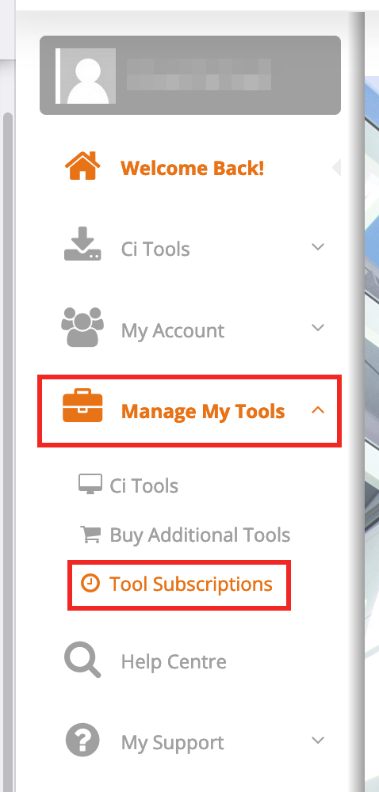
然后会进入订阅管理界面。选项不少，最常用的是：
- 这个选项用于更换下次扣款（及其后所有扣款）使用的信用卡——换了卡、旧卡过期、有新卡要录入时就点它。
- 这个选项用于更换订阅方案或档位，例如从 Pro 换到 Premium。升级立即生效并按差价补收部分费用；降级则在下一个账单日生效。
- 这个选项用于在年付与月付之间切换付费周期。
- 这个选项用于完全取消订阅。
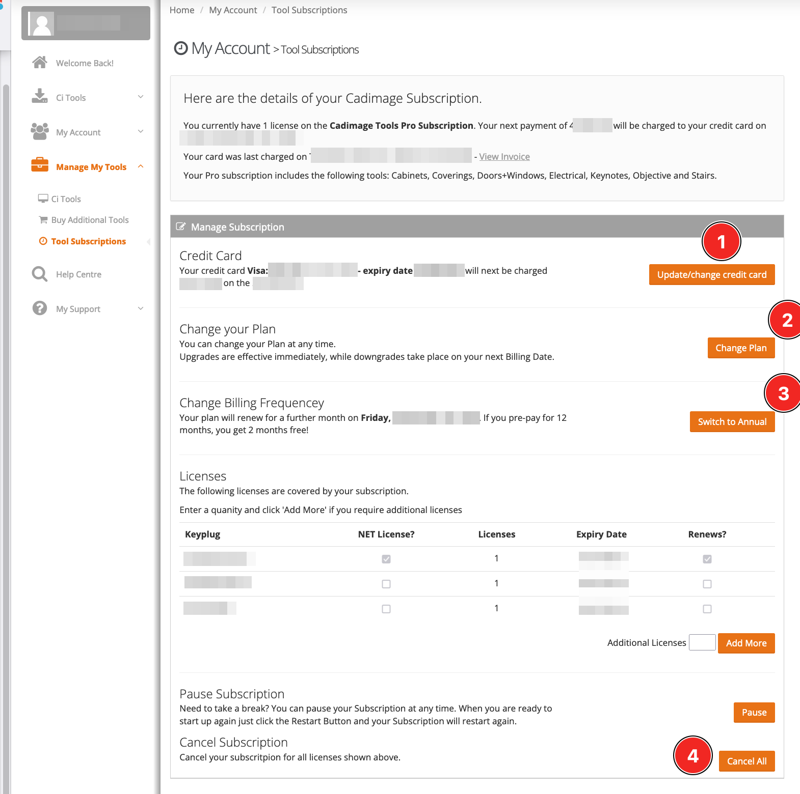
注意：一次只能做一项变更——比如你可以降级订阅类型，但同一账单周期内就不能再改月付或取消订阅。
如需多项操作，请联系官方支持团队，告知你的目标和已完成的部分。
You can make changes to your Ci Tools subscription type, frequency, and Payment Method online on MyCi (https://myci.centralinnovation.com).
To get started, login there, and go to Manage My Tools - Tool Subscriptions
You'll then be taken to the Subscription management screen. There are quite a few options here, but the most commonly used ones are:
- This option will allow you to change the Credit Card that is used to do your next payment (and all payments after that) - so hit this button if you have changed cards, or your old card expired, and you have a new one to enter
- This option will allow you to switch your Subscription plan or Tier. For instance, to change from a Pro subscription to Premium. Upgrades are done immediately and incur a part-payment for the change in price, and Downgrades are done at your next billing date
- This option allows you to toggle your Payment Frequency between Annual and Monthly
- And this option allows you to cancel your subscription entirely
Note: You can only make 1 change at a time - i.e. you can Downgrade your Subscription type, but if you do so, you will not also be able to change to Monthly, or Cancel your subscription within the same Billing period
If you need to do multiple operations, please contact our support team and let them know what you want to do and what you have done so far
英文原文对照Official English Original
You can make changes to your Ci Tools subscription type, frequency, and Payment Method online on MyCi (https://myci.centralinnovation.com).
To get started, login there, and go to Manage My Tools - Tool Subscriptions
You'll then be taken to the Subscription management screen. There are quite a few options here, but the most commonly used ones are:
- This option will allow you to change the Credit Card that is used to do your next payment (and all payments after that) - so hit this button if you have changed cards, or your old card expired, and you have a new one to enter
- This option will allow you to switch your Subscription plan or Tier. For instance, to change from a Pro subscription to Premium. Upgrades are done immediately and incur a part-payment for the change in price, and Downgrades are done at your next billing date
- This option allows you to toggle your Payment Frequency between Annual and Monthly
- And this option allows you to cancel your subscription entirely
Note: You can only make 1 change at a time - i.e. you can Downgrade your Subscription type, but if you do so, you will not also be able to change to Monthly, or Cancel your subscription within the same Billing period
If you need to do multiple operations, please contact our support team and let them know what you want to do and what you have done so far
把 Ci Tools 部署到 BIMcloud / BIM Server
Loading your Ci Tools onto your BIMCloud
共有 3 种方法，难度不同，应由负责你们 BIM Server 的人来操作。
我们一般推荐方法 1——最直接，只要遵守全部库与插件管理规范就不会出问题。
方法 2 和 3 可能留下后患，日后需要额外维护以避免 BIM Server 上出现重复对象或多余项目。
方法 1 – 刷新 BIM Server 库…
如果你最近更新过 Cadimage Tools，就应该用这个方法。
在团队协作（Teamwork）项目里进入 File > Libraries & Objects > Manage BIM Server Libraries：
会打开 Manage BIM Server Libraries 对话框，顶部显示当前连接的服务器。
BIM Server 上现有库的列表会显示来源电脑和最近更新时间等细节，据此可判断是否需要更新。
你需要以BIM Server 管理员身份操作，并拥有库管理的访问权限（Access Rights）——这些权限可防止其他人从各自工作站上传错误的库。权限通过 BIM Server Manager 程序和用户设置配置：
选择要更新的库。以我的电脑为例，我只更新 ArchiCAD Library 16——所有 Cadimage 库都会自动装在里面，我的自定义库也在里面。然后点「Refresh」按钮，它会自动在你电脑上查找 ArchiCAD Library 16；找不到时会提示你指定位置。这一步要几分钟，完成后会弹窗列出新增、删除和刷新的内容：
点 OK 后关闭 Manage BIM Server Libraries 对话框。由于库发生了变化，ArchiCAD 会提示在当前团队协作项目中重新加载库，点「Reload」即可为当前项目获取更新后的库。
其他团队协作成员需要重启 ArchiCAD 才能获得新的 BIM Server 库。
方法 2 – 共享一个新项目并替换 BIM Server 库…
（确认本机库全部最新后）用本机库替换 BIM Server 库的一个简单办法：新建一个项目，然后 File > Teamwork > Share：
弹出的 Share this Project 对话框中给项目起个名字——最好简单，方便日后删除。然后勾选「Replace Linked libraries with Server Libraries automatically」：
注意：理想情况是共享一个你今后真要用的项目或模板，否则这个项目会一直留在 BIM Server 上让人困惑。若坚持用此方法，最好把用户设为「Custom」并点「Users and roles...」只允许自己看到该项目，以免干扰他人。
项目共享到 BIM Server 后，会用共享发起电脑上的 ArchiCAD Library 16 替换服务器上正在使用的版本。
其他团队协作成员需要重启 ArchiCAD 才能获得新的 BIM Server 库。
方法 3 – 把 Cadimage 库添加到 BIM Server…
这是把 Cadimage 库加进 BIM Server 的高级方法，只建议有经验的 BIM Server 管理员使用。安装 Cadimage Tools 时需要选择「Advanced Install」把它们装到默认路径之外，以免向 BIM Server 库添加 Cadimage 库时出现重复。用这个方法必须为每个团队协作项目手动添加 Cadimage 库，前两种方法则可以省去这一步。
最后这个方法是把 Cadimage 库手动上传到 BIM Server。它避免刷新整个 ArchiCAD Library 16，但代价是：每个想用 Cadimage Tools 的团队协作项目都得手动挂接 Cadimage 库。
操作：进入 File > Libraries and Objects > Manage BIM Server Libraries…
在 Manage BIM Server Libraries 中点「Upload」按钮：
接着会提示选择要上传的库。由于每个 Cadimage 工具通常还需要额外的「Global」库，最稳妥的做法是上传整个 Cadimage Library 文件夹：
点「Choose」后库会自动上传到 BIM Server：
现在要把这个新库加入你的项目。在团队协作项目里进入 File > Libraries and Objects > Library Manager：
Library Manager 此时只显示内嵌库（Embedded Library）（项目专属）和当前使用的 BIM Server 库。先要保留（Reserve）Library Manager：选中一个 BIM Server 库，点「Reserve」：
保留之后就能向当前项目添加 BIM Server 库了。点「Add…」旁的小右箭头，选「Use Bim Server Library…」：
选中刚上传的 Cadimage 库，点「Add」：
回到 Library Manager，点「OK」刷新已加载的库，项目中的所有库会随之更新，需要一点时间。如果 Cadimage Tools 装在默认位置，刷新 ArchiCAD Library 文件夹时可能产生重复——因为其中的 Cadimage Library 文件夹也会被加载。
其他团队协作成员需要重启 ArchiCAD 才能获得新的 BIM Server 库。
There are 3 different methods that can be done. These range in difficulty and should only be completed by the person in charge of your BIM Server.
We generally recommend you use Method 1 as this is the most straight forward method & no issues could possibly arrise from this is all Library & Add-on Management advice is followed.
Method 2 and 3 can cause issues later on & some work may need to be carried out later to maintain this to avoid duplicate objects or unnecessary projects on your BIM Server.
Method 1 – Refresh the BIM Server Libraries ...
This method also works and should be done if you have updated your Cadimage Tools lately.
From within your Teamwork project go to File>Libraries & Objects>Manage BIM Server Libraries:
It will open the Manage BIM Server Libraries dialog with your current server selected at the top.
The current libraries in the BIM Server will display details like which computer it came from & when it was last updated, this is a pretty good indication whether an update is required.
You will need to be the admin user for the BIM Server who has the Access Rights to manage libraries, these Access Rights will stop other people uploading incorrect libraries from their workstation. This is done via the BIM Server Manager program & User settings:
Select the Library you want to update, for my computer I am updating just my ArchiCAD Library 16 as all of the Cadimage libraries are automatically installed in there and all my custom libraries are located within it as well. Then click the ‘Refresh’ button & it will automatically look for the ArchiCAD Library 16 in your computer, if it doesn’t find it; it will prompt you to indicate where it is located. This will take a few minutes & once complete a dialog will show you what has been added, deleted & refreshed:
Once you click OK you can close the Manage BIM Server Libraries dialog. ArchiCAD will prompt you to reload the libraries within the teamwork project as they have changed, simply click ‘Reload’ and it will get the new updated libraries for the project you are current working on
All other Teamwork members will need to restart ArchiCAD to receive the new BIM Server Libraries.
Method 2 – Share a new project & replace BIM Server libraries ...
An easy way to replace your BIM Server Library with the one from your computer (after you checked its all up to date) is to start a new project then go to File>Teamwork>Share:
The Share this Project dialog that appears will allow you to name the project, best to give it a simple name so it can be deleted in the future. Then you can select the ‘Replace Linked libraries with Server Libraries automatically’:
NOTE: Ideally this will be a project or template that you will want to use in future use otherwise this project will stay on your BIM Server and confuse others. Should you choose to proceed with this method it would be best to set the users to 'Custom' and click 'Users and roles...' choosing only yourself to view that project so it does not confuse others.
Once the project shares to the BIM Server it will replace the ArchiCAD Library 16 that is current in use by the BIM Server with the one that is on the machine that the project is being shared from.
All other Teamwork members will need to restart ArchiCAD to receive the new BIM Server Libraries.
Method 3 – Add the Cadimage Library to the BIM Server ...
This method is the advanced method of adding the Cadimage Libraries to the BIM Server, it is recommended only experienced BIM Server Managers undertake this method. You will need to have used an 'Advanced Install' when installing the Cadimage Tools so they are placed outside of the normal file path to ensure that duplicates do not occur when adding the Cadimage Library to your BIM Server Libraries. With this method you will need to manually add the Cadimage Library to each Teamwork project, with the previous two methods this can be avoided.
The final method is to manually add the Cadimage Library to your BIM Server, this method avoids you from refreshing your entire ArchiCAD Library 16 but also means that you will then have to manually add the Cadimage Libraries to any Teamwork project you want to use the Cadimage Tools on.
To do this go to File>Libraries and Objects>Manage BIM Server Libraries…
Within the Manage BIM Server Libraries click the ‘Upload’ button:
You will then be prompted to navigate to a library that you want to upload. Because each Cadimage tool usually requires additional ‘Global’ libraries it is much safer you load the entire Cadimage Library folder:
Once you click ‘Choose’ the library will automatically be uploaded to the BIM Server:
Now you will need to add this new additional library to your projects. To do this from within the Teamwork project go toFile>Libraries and Objects>Library Manager:
The Library Manager will now only show Embedded Library (specific to the project) and what BIM Server Libraries it is currently using. You will first need to reserve the Library Manager, just select a BIM Server library & click ‘Reserve’:
Once reserved you will be able to add BIM Server Libraries to the current project. Click the small right arrow beside ‘Add…’ and choose ‘Use Bim Server Library…’:
Select the newly uploaded Cadimage Library & click 'Add':
It will then bring you back to the Library Manager. Click 'OK' to refresh the loaded library and it will then update all libraries loaded in the project taking a few moments. If the Cadimage Tools are installed in the default location you may get duplicates when the ArchiCAD Library folder is refreshed as it will load the Cadimage Library folder within it also.
All other Teamwork members will need to restart ArchiCAD to receive the new BIM Server Libraries.
英文原文对照Official English Original
There are 3 different methods that can be done. These range in difficulty and should only be completed by the person in charge of your BIM Server.
We generally recommend you use Method 1 as this is the most straight forward method & no issues could possibly arrise from this is all Library & Add-on Management advice is followed.
Method 2 and 3 can cause issues later on & some work may need to be carried out later to maintain this to avoid duplicate objects or unnecessary projects on your BIM Server.
Method 1 – Refresh the BIM Server Libraries ...
This method also works and should be done if you have updated your Cadimage Tools lately.
From within your Teamwork project go to File>Libraries & Objects>Manage BIM Server Libraries:
It will open the Manage BIM Server Libraries dialog with your current server selected at the top.
The current libraries in the BIM Server will display details like which computer it came from & when it was last updated, this is a pretty good indication whether an update is required.
You will need to be the admin user for the BIM Server who has the Access Rights to manage libraries, these Access Rights will stop other people uploading incorrect libraries from their workstation. This is done via the BIM Server Manager program & User settings:
Select the Library you want to update, for my computer I am updating just my ArchiCAD Library 16 as all of the Cadimage libraries are automatically installed in there and all my custom libraries are located within it as well. Then click the ‘Refresh’ button & it will automatically look for the ArchiCAD Library 16 in your computer, if it doesn’t find it; it will prompt you to indicate where it is located. This will take a few minutes & once complete a dialog will show you what has been added, deleted & refreshed:
Once you click OK you can close the Manage BIM Server Libraries dialog. ArchiCAD will prompt you to reload the libraries within the teamwork project as they have changed, simply click ‘Reload’ and it will get the new updated libraries for the project you are current working on
All other Teamwork members will need to restart ArchiCAD to receive the new BIM Server Libraries.
Method 2 – Share a new project & replace BIM Server libraries ...
An easy way to replace your BIM Server Library with the one from your computer (after you checked its all up to date) is to start a new project then go to File>Teamwork>Share:
The Share this Project dialog that appears will allow you to name the project, best to give it a simple name so it can be deleted in the future. Then you can select the ‘Replace Linked libraries with Server Libraries automatically’:
NOTE: Ideally this will be a project or template that you will want to use in future use otherwise this project will stay on your BIM Server and confuse others. Should you choose to proceed with this method it would be best to set the users to 'Custom' and click 'Users and roles...' choosing only yourself to view that project so it does not confuse others.
Once the project shares to the BIM Server it will replace the ArchiCAD Library 16 that is current in use by the BIM Server with the one that is on the machine that the project is being shared from.
All other Teamwork members will need to restart ArchiCAD to receive the new BIM Server Libraries.
Method 3 – Add the Cadimage Library to the BIM Server ...
This method is the advanced method of adding the Cadimage Libraries to the BIM Server, it is recommended only experienced BIM Server Managers undertake this method. You will need to have used an 'Advanced Install' when installing the Cadimage Tools so they are placed outside of the normal file path to ensure that duplicates do not occur when adding the Cadimage Library to your BIM Server Libraries. With this method you will need to manually add the Cadimage Library to each Teamwork project, with the previous two methods this can be avoided.
The final method is to manually add the Cadimage Library to your BIM Server, this method avoids you from refreshing your entire ArchiCAD Library 16 but also means that you will then have to manually add the Cadimage Libraries to any Teamwork project you want to use the Cadimage Tools on.
To do this go to File>Libraries and Objects>Manage BIM Server Libraries…
Within the Manage BIM Server Libraries click the ‘Upload’ button:
You will then be prompted to navigate to a library that you want to upload. Because each Cadimage tool usually requires additional ‘Global’ libraries it is much safer you load the entire Cadimage Library folder:
Once you click ‘Choose’ the library will automatically be uploaded to the BIM Server:
Now you will need to add this new additional library to your projects. To do this from within the Teamwork project go toFile>Libraries and Objects>Library Manager:
The Library Manager will now only show Embedded Library (specific to the project) and what BIM Server Libraries it is currently using. You will first need to reserve the Library Manager, just select a BIM Server library & click ‘Reserve’:
Once reserved you will be able to add BIM Server Libraries to the current project. Click the small right arrow beside ‘Add…’ and choose ‘Use Bim Server Library…’:
Select the newly uploaded Cadimage Library & click 'Add':
It will then bring you back to the Library Manager. Click 'OK' to refresh the loaded library and it will then update all libraries loaded in the project taking a few moments. If the Cadimage Tools are installed in the default location you may get duplicates when the ArchiCAD Library folder is refreshed as it will load the Cadimage Library folder within it also.
All other Teamwork members will need to restart ArchiCAD to receive the new BIM Server Libraries.
更新 BIMcloud 上的 Ci Tools 库
How to update Ci Tools Library on BIMcloud
要更新 BIMcloud 上的 Ci Tools，请进入 File > Libraries and Objects > Manage BIMcloud Libraries。
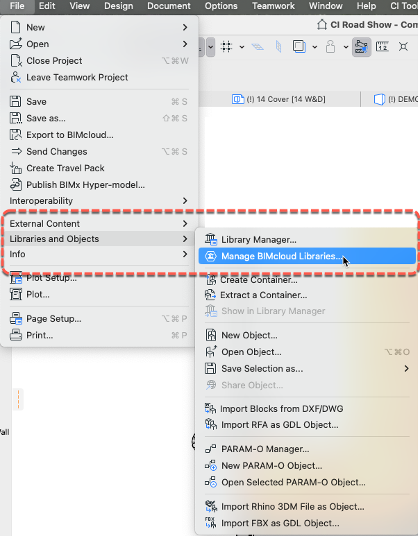
- 在 BIMcloud 窗口找到 Libraries，点「Upload a local Library to the BIMcloud」图标。
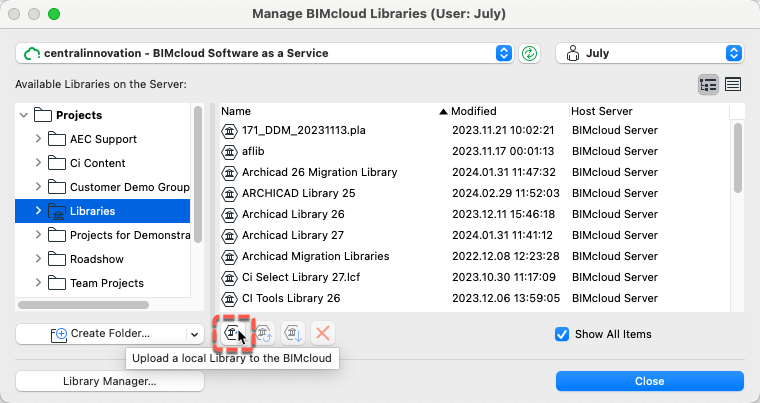
- 找到要上传的 Ci Tools Library xx，点 Open。
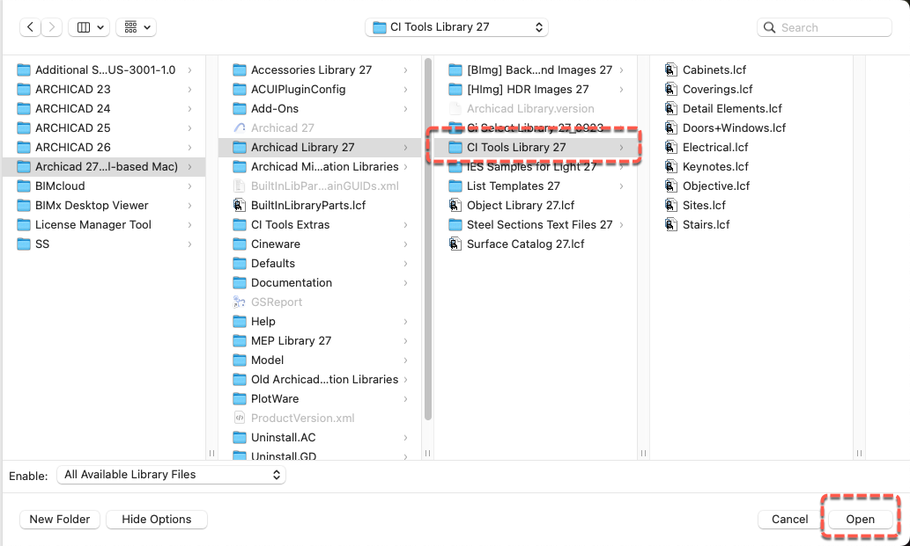
- 会弹出「Warning!」窗口，提示同名的现有库将被更新。点「Update」完成操作。
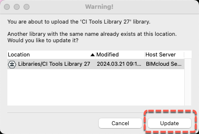
- 之后 Archicad 会重启项目，新版 Ci Tools Library 即可使用。
To update the Ci Tools on BIMcloud, please go to File>Libraries and Objects> Manage BIMcloud Libraries.
- Find Libraries in the BIMcloud window and click on "Upload a local Library to the BIMcloud icon.
- Find the Ci Tools Library xx you wish to upload and click Open.
- A Warning! window will pop up telling the current library with the same name will be updated. Please click "Update" to complete the process.
- After this Archicad will restart the project and the new version of the Ci Tools Library will be ready to be used.
英文原文对照Official English Original
To update the Ci Tools on BIMcloud, please go to File>Libraries and Objects> Manage BIMcloud Libraries.
- Find Libraries in the BIMcloud window and click on "Upload a local Library to the BIMcloud icon.
- Find the Ci Tools Library xx you wish to upload and click Open.
- A Warning! window will pop up telling the current library with the same name will be updated. Please click "Update" to complete the process.
- After this Archicad will restart the project and the new version of the Ci Tools Library will be ready to be used.
Archicad 28/29 的库加载新机制（Libpack）
Library Loading in Archicad 28 and 29
在 Archicad 28 或 29 中使用 Ci Tools 之前，务必先了解从这个版本起库（Libraries）机制的一些变化。
请严格按以下步骤操作，不要想当然认为过去的 Library Manager 用法依然适用。
这些变化大多围绕新的「Libpack」库体系（又称 Global Libraries）及其工作方式。
使用 Libpack 时需要知道以下几点：
- 使用 Libpack 时，不能让 Library Manager 加载整个文件夹。可以多选并加载多个 Libpack，但像加载 LCF 文件夹那样去加载文件夹，并不会把其中的 Libpack 加载进来。
- 即使 Libpack 就放在 Archicad Library 28/29 文件夹里，Archicad 28 和 29 也不会自动把它们加载进项目。
- 因此，新建项目后，必须先把 Ci Tools 的 Libpack 添加进 Library Manager，才能使用 Ci Tools。
- 不要把包含相同库部件的 Libpack 和 LCF 同时加载进一个项目。建议只加载 LCF 或只加载 Libpack，二选一。同时加载会产生重复的库部件，损害项目的「健康度」。
规则说完了，下面看把 Libpack 或 LCF 加载进项目的过程：
- 从 File 菜单打开 Library Manager。
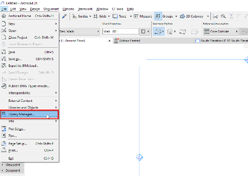
- 弹出 Library Manager 对话框。这里可以看到项目已加载了哪些 Libpack。
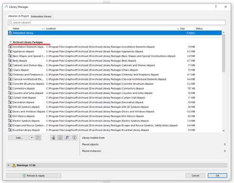
- 然后点对话框底部的「Add」按钮。
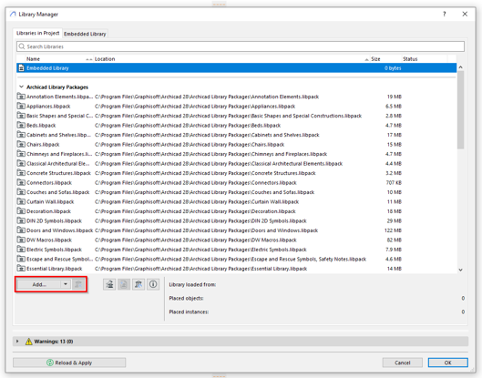
- 接着可以浏览并定位要加载的 LCF 或 Libpack。找到存放目标文件的文件夹：
- CI Tools 的 LCF 位于：Archicad 28 是 Graphisoft/Archicad 28/Archicad Library 28/CI Tools Library 28；Archicad 29 是 Graphisoft/Archicad 29/CI Tools Monolith Migration Library。
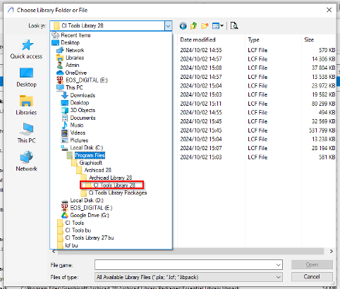
-
- Ci Tools 的 Libpack 位于：Graphisoft/Archicad 28/CI Tools Library Packages 或 Graphisoft/Archicad 29/CI Tools Library Packages。
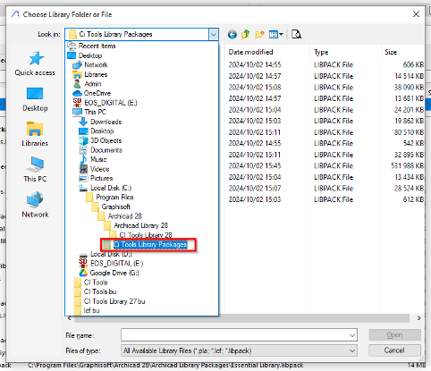
- 注意：如前所述，加载 Libpack 时必须选中全部要加载的文件再点 Open——不能只添加文件夹。
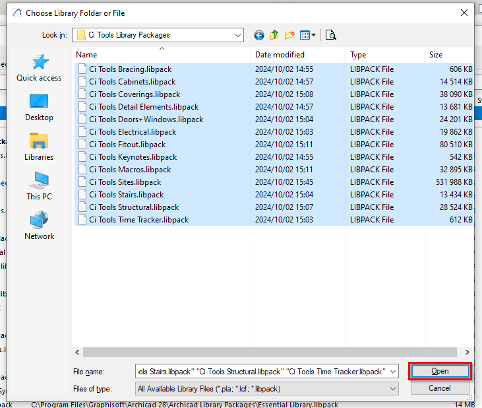
加好 Libpack 或 LCF 后，点 OK 加载这些库并关闭 Library Manager 即可。
Before you start using the Ci Tools in Archicad 28 or 29, it's important to know about some changes to the way that Libraries work in Archicad as of this version
Please follow these steps without assuming that the way that the Library Manager worked in the past still applies.
Most of these changes revolve around the new "Libpack" system of libraries - also known as the Global Libraries - and how they work.
Here are the main things you need to know when using Libpacks:
- When using Libpacks, you can't select a Folder for the Library Manager to load. Multiple Libpacks can be selected and loaded, but loading the folder, as is possible with folders of LCFs, will not load the Libpacks in that folder
- Archicad 28 and 29 will NOT automatically load Libpacks into your Archicad Project EVEN IF they are in the Archicad Library 28/29 folder
- Due to the above, when you create a new project, you will need to add in the Ci Tools Libpacks to your library manager before you can use the Ci Tools
- It is not good practice to load Libpacks and LCF’s that contain the same Library Parts into a Project. It is recommended that either the LCF or the Libpack is loaded, but not both. This will create duplicate Library Parts and is detrimental to the ‘health’ of your Project.
With those rules out of the way, let's look at the process of Loading the Libpacks or LCF’s into a Project:
- Open the Library Manager from the File menu
- This will bring up the Library Manager Dialog. Here we can see which Libpacks have been loaded into the Project
- Next we will select the ‘Add’ button located at the bottom of the Dialog
- This will allow us to browse and locate the LCF or Libpack that we wish to load. We can now Browse to the Folder containing the files we want to load.
- The CI Tools LCFs are located in the directory: Graphisoft/Archicad 28/Archicad Library 28/CI Tools Library 28 for Archicad 28, and Graphisoft/Archicad 29/CI Tools Monolith Migration Library for Archicad 29
-
- And the Ci Tools Libpacks are located in the Directory: Graphisoft/Archicad 28/CI Tools Library Packages or Graphisoft/Archicad 29/CI Tools Library Packages
- Please note that, as mentioned earlier, if you are loading Libpacks, you have to select ALL the files you want to load and click on open - you can't just add the folder.
Once you have added either the Libpacks or the LCFs, just Hit Ok to load those libraries and close the Library Manager
英文原文对照Official English Original
Before you start using the Ci Tools in Archicad 28 or 29, it's important to know about some changes to the way that Libraries work in Archicad as of this version
Please follow these steps without assuming that the way that the Library Manager worked in the past still applies.
Most of these changes revolve around the new "Libpack" system of libraries - also known as the Global Libraries - and how they work.
Here are the main things you need to know when using Libpacks:
- When using Libpacks, you can't select a Folder for the Library Manager to load. Multiple Libpacks can be selected and loaded, but loading the folder, as is possible with folders of LCFs, will not load the Libpacks in that folder
- Archicad 28 and 29 will NOT automatically load Libpacks into your Archicad Project EVEN IF they are in the Archicad Library 28/29 folder
- Due to the above, when you create a new project, you will need to add in the Ci Tools Libpacks to your library manager before you can use the Ci Tools
- It is not good practice to load Libpacks and LCF’s that contain the same Library Parts into a Project. It is recommended that either the LCF or the Libpack is loaded, but not both. This will create duplicate Library Parts and is detrimental to the ‘health’ of your Project.
With those rules out of the way, let's look at the process of Loading the Libpacks or LCF’s into a Project:
- Open the Library Manager from the File menu
- This will bring up the Library Manager Dialog. Here we can see which Libpacks have been loaded into the Project
- Next we will select the ‘Add’ button located at the bottom of the Dialog
- This will allow us to browse and locate the LCF or Libpack that we wish to load. We can now Browse to the Folder containing the files we want to load.
- The CI Tools LCFs are located in the directory: Graphisoft/Archicad 28/Archicad Library 28/CI Tools Library 28 for Archicad 28, and Graphisoft/Archicad 29/CI Tools Monolith Migration Library for Archicad 29
-
- And the Ci Tools Libpacks are located in the Directory: Graphisoft/Archicad 28/CI Tools Library Packages or Graphisoft/Archicad 29/CI Tools Library Packages
- Please note that, as mentioned earlier, if you are loading Libpacks, you have to select ALL the files you want to load and click on open - you can't just add the folder.
Once you have added either the Libpacks or the LCFs, just Hit Ok to load those libraries and close the Library Manager
在 Archicad 29 中打开旧版项目的库加载
Loading Libraries in Archicad 29
在 Archicad 29 中打开旧版 Archicad 的项目时，必须确保加载配套的正确库文件。
本文覆盖两种情形——在 v29 中打开 v28 项目，以及在 v29 中打开 v27 及更早的项目。
在 Archicad 29 中加载 Archicad 28 项目
Archicad 28 同样使用库包（Library Packages），所以只需把 v28 的 libpack 换成 v29 的。
打开 Library Manager，移除现有的 Ci Tools Library Packages：
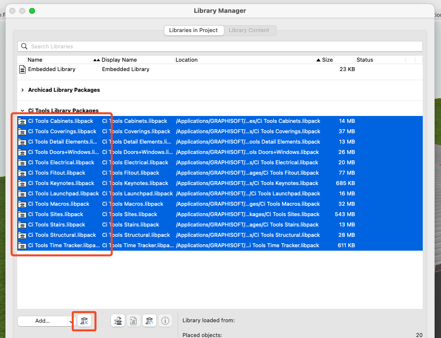
然后点 Add...，把 Archicad 29 的全部新 libpack 加进来——它们在 Archicad 29 文件夹里的「Ci Tools Library Packages」文件夹中。
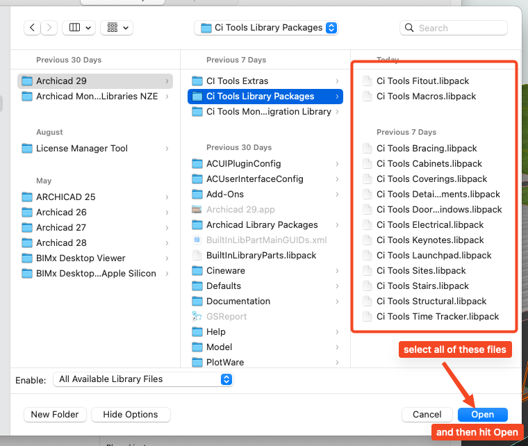
加载后应如下图：
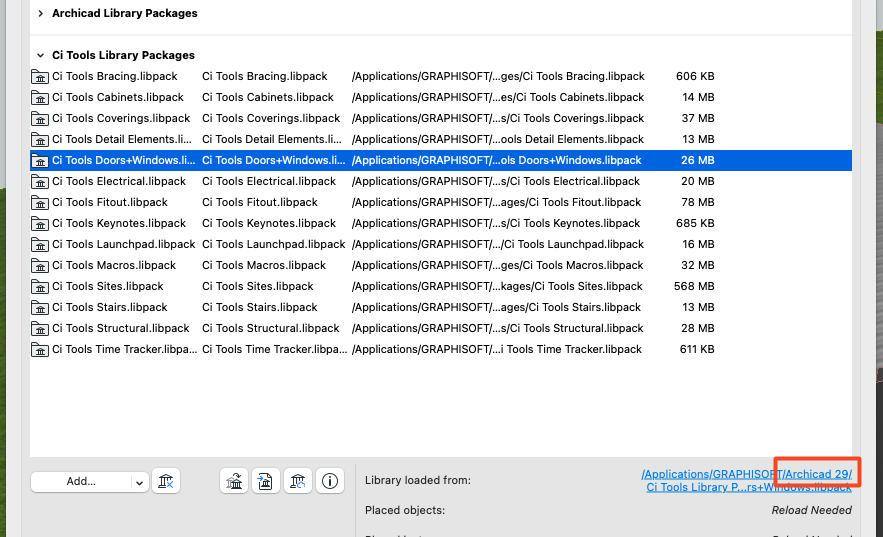
点 OK 即完成。
在 Archicad 29 中加载 Archicad 27 或更早项目
打开库包体系出现之前的老项目时，需要使用 Monolith Migration 库。
先从 MyCi 此处 或 此处 下载安装（注意一定要下载 Monolith Migration Library 这个库）。
装好后，它位于 Graphisoft 文件夹下的 Monolith Migration Library。
现在用 Archicad 29 打开要迁移的项目。打开过程中会询问是否迁移库——点「是」，它会自动找到并使用你刚装的库。
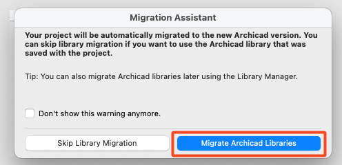
如果没有看到这个询问、或者点错了按钮，可以稍后在 Library Manager 里点这个按钮补做：
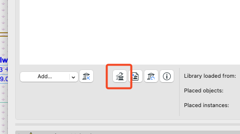
接着还要加载 Ci Tools 的迁移库。打开 Library Manager，点左下角 Add 按钮，选中 Archicad 29 文件夹里的「Ci Tools Monolith Migration Library」，点 Open。
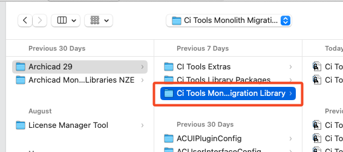
在 Library Manager 按 OK，全部完成！
When loading a project from an Older Archicad version in Archicad 29, you need to ensure that you are loading the correct libraries to Match it
This document covers 2 scenarios - Opening a v28 project in v29, and opening a v27 or older project in v29
Loading an Archicad 28 project in Archicad 29
Since Archicad 28 used Library Packages as well, we just need to swap the v28 libpacks for v29 ones
To do this, open your Library Manager and Remove the Ci Tools Library Packages you have there:
And then hit Add... and add in all the new libpacks from Archicad 29 - they can be found in your Archicad 29 folder inside the "Ci Tools Library Packages" folder
It should look like this:
The just hit OK, and you're done
Loading an Archicad 27 or older project in Archicad 29
When loading projects from before the new Library Packages existed, you will need to use the Monolith Migration library.
So first, download and install that from here on MyCi, or here (just make sure you get the Monolith Migration Library, specifically)
Once you have that installed, it can be found in your Graphisoft folder as Monolith Migration Library
Now, open up the Archicad project you want to migrate in Archicad 29. While you are opening it, it will ask if you want to Migrate the Library - click Yes on this, and it will automatically find and use your just-installed library.
If you didn't see that question, or hit the wrong button on it, you can do it later by opening the Library manager and hitting this button:
Next, we need to load the Ci Tools migration libraries too. To do that, open your Library Manager, hit the Add button on the bottom left, and then select the "Ci Tools Monolith Migration Library" inside your Archicad 29 folder, and then hit Open
Then just press OK on the Library Manager, and you're all done!
英文原文对照Official English Original
When loading a project from an Older Archicad version in Archicad 29, you need to ensure that you are loading the correct libraries to Match it
This document covers 2 scenarios - Opening a v28 project in v29, and opening a v27 or older project in v29
Loading an Archicad 28 project in Archicad 29
Since Archicad 28 used Library Packages as well, we just need to swap the v28 libpacks for v29 ones
To do this, open your Library Manager and Remove the Ci Tools Library Packages you have there:
And then hit Add... and add in all the new libpacks from Archicad 29 - they can be found in your Archicad 29 folder inside the "Ci Tools Library Packages" folder
It should look like this:
The just hit OK, and you're done
Loading an Archicad 27 or older project in Archicad 29
When loading projects from before the new Library Packages existed, you will need to use the Monolith Migration library.
So first, download and install that from here on MyCi, or here (just make sure you get the Monolith Migration Library, specifically)
Once you have that installed, it can be found in your Graphisoft folder as Monolith Migration Library
Now, open up the Archicad project you want to migrate in Archicad 29. While you are opening it, it will ask if you want to Migrate the Library - click Yes on this, and it will automatically find and use your just-installed library.
If you didn't see that question, or hit the wrong button on it, you can do it later by opening the Library manager and hitting this button:
Next, we need to load the Ci Tools migration libraries too. To do that, open your Library Manager, hit the Add button on the bottom left, and then select the "Ci Tools Monolith Migration Library" inside your Archicad 29 folder, and then hit Open
Then just press OK on the Library Manager, and you're all done!
Archicad 29 技术预览版 Ci Tools 安装
Ci Tools for Archicad 29 Technical Preview
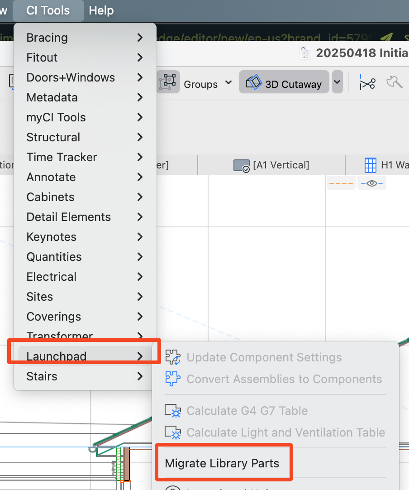
- 按你的操作系统用以下链接下载压缩包：
- 下载后打开/解压 ZIP 文件。
- 做第 4 步前，请确保 ARCHICAD 没有在运行。
- 安装工具只需把文件拷到电脑上正确的位置：
- 把解压出的 CI Tools 文件夹移入 Archicad 29 Technology Preview\Add-Ons 文件夹
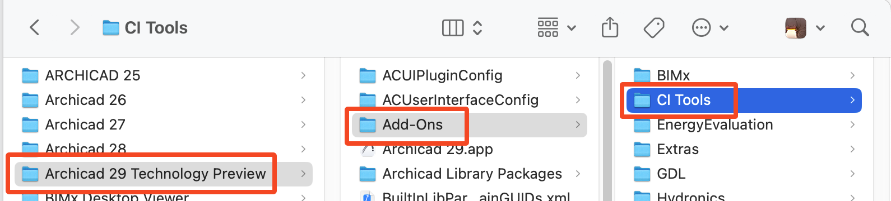
- 把解压出的 CI Tools Library Packages 文件夹移入 Archicad 29 Technology Preview 文件夹
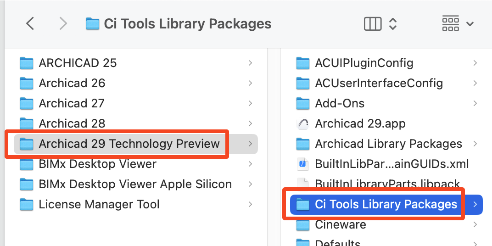
- 把解压出的 Ci Tools Monolith Migration Library 文件夹移入 Archicad 29 Technology Preview 文件夹
- 把解压出的 CI Tools 文件夹移入 Archicad 29 Technology Preview\Add-Ons 文件夹
- Download the pack for your Operating System using the following links:
- Windows: Download Here
- Macos: Download Here
- Once downloaded, open/extract the ZIP file
- Before doing step 4 - please ensure that ARCHICAD is not running
- To actually Install the tools, you now just need to copy the files into the correct places on your computer:
- Move the extracted CI Tools folder into your Archicad 29 Technology Preview\Add-Ons folder
- Move the extracted CI Tools Library Packages folder into your Archicad 29 Technology Preview folder
- Move the extracted Ci Tools Monolith Migration Library folder into your Archicad 29 Technology Preview folder
- Move the extracted CI Tools folder into your Archicad 29 Technology Preview\Add-Ons folder
英文原文对照Official English Original
- Download the pack for your Operating System using the following links:
- Windows: Download Here
- Macos: Download Here
- Once downloaded, open/extract the ZIP file
- Before doing step 4 - please ensure that ARCHICAD is not running
- To actually Install the tools, you now just need to copy the files into the correct places on your computer:
- Move the extracted CI Tools folder into your Archicad 29 Technology Preview\Add-Ons folder
- Move the extracted CI Tools Library Packages folder into your Archicad 29 Technology Preview folder
- Move the extracted Ci Tools Monolith Migration Library folder into your Archicad 29 Technology Preview folder
- Move the extracted CI Tools folder into your Archicad 29 Technology Preview\Add-Ons folder
疑难：Ci Tools 库版本不匹配警告
The loaded library for Ci Tools is the wrong version.
问题：
打开 Archicad 文件时报错，提示项目或某个 Ci Tools 的插件库版本较旧。
原因可能有多种，主要两种是：
- 有人用新版 Archicad 把文件回存（Back save）成了旧版 Archicad 可用的格式；
- 这是一个团队协作项目，或是一个使用了 BIMcloud Basic / BIMcloud 上库的独享项目。
解决：
Issue:
When opening an Archicad file an error saying that either the project or the add of a Ci Tools is older.
This can be due to a number of factors, the main 2 are;
- Someone has Back saved a file from a newer version of Archicad for the file to be used in an older version of Archicad,
- This is a teamwork project, or is a solo project using a library from your BIMcloud Basic or BIMcloud,
Solution:
Please see CI Tools Library version warning
英文原文对照Official English Original
Issue:
When opening an Archicad file an error saying that either the project or the add of a Ci Tools is older.
This can be due to a number of factors, the main 2 are;
- Someone has Back saved a file from a newer version of Archicad for the file to be used in an older version of Archicad,
- This is a teamwork project, or is a solo project using a library from your BIMcloud Basic or BIMcloud,
Solution:
Please see CI Tools Library version warning
各工具入门视频合集
Ci Tool Getting Started Videos
Cabinets（橱柜木作）入门
Detail Elements（二维详图）入门
Keynotes（规范注释）入门
Metadata（属性管理）入门
Objective 入门
Sites（场地景观）入门
Stairs（楼梯）入门
Time Tracker（工时统计）入门
Transformer（项目镜像）入门
Introduction to Cabinets
Introduction to Detail Elements
Introduction to Keynotes
Introduction to Metadata
Introduction to Objective
Introduction to Sites
Introduction to Stairs
Introduction to Time Tracker
Introduction to Transformer
英文原文对照Official English Original
Introduction to Cabinets
Introduction to Detail Elements
Introduction to Keynotes
Introduction to Metadata
Introduction to Objective
Introduction to Sites
Introduction to Stairs
Introduction to Time Tracker
Introduction to Transformer
Q&A 研讨会实操视频索引
Index of Ci Tools How-To Videos (from Q&A Webinars)
这是 Ci Tools 每周 Q&A 网络研讨会讲过主题的滚动索引。每个链接都直达视频中讲该主题的时间点。
做这个索引的目的，是让你在支持工单里能直接回一句加一个视频链接就解决问题、减少重复劳动——所以请尽量记得随时用起来！
如何使用门窗（Doors+Windows）明细表注释：https://youtu.be/BAso7ozU6rE?t=148
如何使用 Floor Framing Select 对象：https://youtu.be/uPe5WwWgCEE?t=402
如何使用 Bullnose Verandah Roof（圆角外廊屋顶）Select 对象：https://youtu.be/uPe5WwWgCEE?t=939
如何使用 Shower（淋浴间）Select 对象：https://youtu.be/uPe5WwWgCEE?t=1099
如何在橱柜（Cabinet）工具中开洗手池孔：https://youtu.be/uPe5WwWgCEE?t=1645
如何建模一个常规橱柜（完整流程）：https://youtu.be/1Cbw0oMPjY8?t=278
如何改变橱柜的显示方式：https://youtu.be/JW51Akfqkbk?t=154
如何为橱柜定制门板和拉手：https://youtu.be/JW51Akfqkbk?t=492
如何创建角窗：https://youtu.be/JW51Akfqkbk?t=1327
如何使用 Keynote 标注样式：https://youtu.be/RK1FUH89_7g?t=624
如何（以及为何）使用 Keynote 审计工具：https://youtu.be/RK1FUH89_7g?t=1098
如何使用属性（Attribute）Keynote：https://youtu.be/RK1FUH89_7g?t=1697
如何在明细表中统计墙与屋顶覆面层面积：https://youtu.be/Gvn9AoHxBY8?t=155
如何用算量（Quantities）工具计算墙与屋顶覆面层面积（含 Quantities 工具简要入门）：https://youtu.be/Gvn9AoHxBY8?t=848
如何用 Ci Stairs 快速做一个楼梯：https://youtu.be/Gvn9AoHxBY8?t=1444
如何使用门窗（Doors+Windows）样式：https://youtu.be/Y1vk0CPPLyo?t=160
如何设置和使用门窗的吸附尺寸（Snap Sizes）：https://youtu.be/Y1vk0CPPLyo?t=975
如何把手动选择的条目加进 Keynote 明细表：https://youtu.be/Y1vk0CPPLyo?t=1502
如何用收藏（Favourites）预置 Keynote 明细表设置：https://youtu.be/Y1vk0CPPLyo?t=1659
如何使用 Keynotes 工具（完整走一遍）：https://youtu.be/qfVOdFHrvNE?t=171
如何对齐或偏移墙覆面层：https://youtu.be/Tig1lr4OPjY?t=115
如何使用场地（Sites）工具（完整概览）：https://youtu.be/Tig1lr4OPjY?t=339
如何用 Sites 工具创建场地边界：https://youtu.be/Tig1lr4OPjY?t=449
如何用 Sites 工具创建建筑外包络（Building Envelope）：https://youtu.be/Tig1lr4OPjY?t=872
如何在建筑外包络上使用复杂（多段线式）边界轮廓：https://youtu.be/Tig1lr4OPjY?t=1010
如何使用 Ci Coverings（覆面层）工具：https://youtu.be/ZUPgs4xfQYU?t=292
如何在 Coverings 工具中使用、修改并创建自己的样式：https://youtu.be/ZUPgs4xfQYU?t=1646
如何使用 Lintel（过梁）Select 对象：https://youtu.be/hULQJWbvsvk?t=339
如何用 Objective 工具挤出造型：https://youtu.be/hULQJWbvsvk?t=895
如何用电气（Electrical）工具做定制墙面板：https://youtu.be/hULQJWbvsvk?t=1351
如何（以及为何）使用 Ci Metadata 工具：https://youtu.be/aBcfjwAtqQU?t=141
如何用 Ci Cabinets 工具做台面：https://youtu.be/aBcfjwAtqQU?t=932
如何使用 Ci 门窗工具——快速概览：https://youtu.be/X7PB_Z0Xklo?t=140
如何创建柱子覆面层：https://youtu.be/5bw4KlOXBbk?t=212
如何用板覆面层（Slab Covering）做预制板和甲板：https://youtu.be/5bw4KlOXBbk?t=500
如何使用消防疏散路线 Select 对象：https://youtu.be/5bw4KlOXBbk?t=781
如何使用挤出轮廓 Select 对象：https://youtu.be/5bw4KlOXBbk?t=1166
如何用更新后的 Select 区域印章（Zone Stamp）自动标注区域尺寸：https://youtu.be/5bw4KlOXBbk?t=1461
如何用覆面层开口偏移显示门窗下方的挂板：https://youtu.be/E7U_FAjmFKo?t=213
如何使用覆面层样式：https://youtu.be/E7U_FAjmFKo?t=450
如何在门窗明细表中显示标高（Datum Levels）：https://youtu.be/E7U_FAjmFKo?t=1400
This is a running index of topics covered in the Ci Tools Weekly Q&A Webinars. Links on each go directly to the timestamp where that topic is covered in the video.
The intention with these is to make it so you can just send a quick reply and a link to the video on support tickets to cut down on re-work, so please try to remember to use them whenever you can!
How to use Doors+Windows Schedule Notes: https://youtu.be/BAso7ozU6rE?t=148
How to use the Floor Framing Select object: https://youtu.be/uPe5WwWgCEE?t=402
How to use the Bullnose Verandah Roof Select Object: https://youtu.be/uPe5WwWgCEE?t=939
How to use the Shower Select Object: https://youtu.be/uPe5WwWgCEE?t=1099
How to cut out a hole for a Sink in the Cabinet tool: https://youtu.be/uPe5WwWgCEE?t=1645
How to model a fairly standard Cabinet (complete workflow): https://youtu.be/1Cbw0oMPjY8?t=278
How to change the way Cabinets are displayed: https://youtu.be/JW51Akfqkbk?t=154
How to create custome door panels and handles for your Cabinets: https://youtu.be/JW51Akfqkbk?t=492
How to create a Corner Window: https://youtu.be/JW51Akfqkbk?t=1327
How to use Keynote Label Styles: https://youtu.be/RK1FUH89_7g?t=624
How (and why) to use the Keynote Audit tool: https://youtu.be/RK1FUH89_7g?t=1098
How to use Attribue Keynotes: https://youtu.be/RK1FUH89_7g?t=1697
How to schedule Wall and Roof Covering areas: https://youtu.be/Gvn9AoHxBY8?t=155
How to use the Quantities tool to calculate Wall and Roof Covering areas (also includes breif intro to how to use Quantities tool): https://youtu.be/Gvn9AoHxBY8?t=848
How to make a Quick and Easy Stair using Ci Stairs: https://youtu.be/Gvn9AoHxBY8?t=1444
How to use Doors+Windows Styles: https://youtu.be/Y1vk0CPPLyo?t=160
How to work with and create Snap Sizes for Doors+Windows: https://youtu.be/Y1vk0CPPLyo?t=975
How to add Manually Selected notes into a Keynotes Schedule: https://youtu.be/Y1vk0CPPLyo?t=1502
How to use Favourites to pre-set Keynote Schedule settings: https://youtu.be/Y1vk0CPPLyo?t=1659
How to use the Keynotes tool (Complete run-through of how to use it): https://youtu.be/qfVOdFHrvNE?t=171
How to Align or Offset Wall Coverings: https://youtu.be/Tig1lr4OPjY?t=115
How to use the Sites Tool (Complete Overview): https://youtu.be/Tig1lr4OPjY?t=339
How to create Site Boundaries using the Sites Tool: https://youtu.be/Tig1lr4OPjY?t=449
How to create a Building Envelope using the Sites Tool: https://youtu.be/Tig1lr4OPjY?t=872
How to use Complex (Polyline-style) Boundary Profiles on your Building Envelopes using the Sites Tool: https://youtu.be/Tig1lr4OPjY?t=1010
How to use the Ci Coverings Tool: https://youtu.be/ZUPgs4xfQYU?t=292
How to use, modify, and create your own Styles in the Coverings tool: https://youtu.be/ZUPgs4xfQYU?t=1646
How to use the Lintel Select Object: https://youtu.be/hULQJWbvsvk?t=339
How to Extrude a shape using the Objective tool: https://youtu.be/hULQJWbvsvk?t=895
How to make Customised Wall Plates using the Electrical tool: https://youtu.be/hULQJWbvsvk?t=1351
How (and why) to use the Ci Metadata tool: https://youtu.be/aBcfjwAtqQU?t=141
How to create Benchtops using the Ci Cabinets tool: https://youtu.be/aBcfjwAtqQU?t=932
How to use the Ci Doors+Winbdows tool - Quick Overview: https://youtu.be/X7PB_Z0Xklo?t=140
How to create Column Coverings: https://youtu.be/5bw4KlOXBbk?t=212
How to create Precast Slabs and Decking using the Slab Covering: https://youtu.be/5bw4KlOXBbk?t=500
How to use the Fire Escape Route Select Object: https://youtu.be/5bw4KlOXBbk?t=781
How to use the Extruded Profile Select Object: https://youtu.be/5bw4KlOXBbk?t=1166
How to use the updated Select Zone Stamp to automatically dimension your Zones: https://youtu.be/5bw4KlOXBbk?t=1461
How to use Covering Opening Offsets to show cladding below Windows/Doors: https://youtu.be/E7U_FAjmFKo?t=213
How to use Coverings Styles: https://youtu.be/E7U_FAjmFKo?t=450
How to show Datum Levels in your Doors+Windows Schedules: https://youtu.be/E7U_FAjmFKo?t=1400
英文原文对照Official English Original
This is a running index of topics covered in the Ci Tools Weekly Q&A Webinars. Links on each go directly to the timestamp where that topic is covered in the video.
The intention with these is to make it so you can just send a quick reply and a link to the video on support tickets to cut down on re-work, so please try to remember to use them whenever you can!
How to use Doors+Windows Schedule Notes: https://youtu.be/BAso7ozU6rE?t=148
How to use the Floor Framing Select object: https://youtu.be/uPe5WwWgCEE?t=402
How to use the Bullnose Verandah Roof Select Object: https://youtu.be/uPe5WwWgCEE?t=939
How to use the Shower Select Object: https://youtu.be/uPe5WwWgCEE?t=1099
How to cut out a hole for a Sink in the Cabinet tool: https://youtu.be/uPe5WwWgCEE?t=1645
How to model a fairly standard Cabinet (complete workflow): https://youtu.be/1Cbw0oMPjY8?t=278
How to change the way Cabinets are displayed: https://youtu.be/JW51Akfqkbk?t=154
How to create custome door panels and handles for your Cabinets: https://youtu.be/JW51Akfqkbk?t=492
How to create a Corner Window: https://youtu.be/JW51Akfqkbk?t=1327
How to use Keynote Label Styles: https://youtu.be/RK1FUH89_7g?t=624
How (and why) to use the Keynote Audit tool: https://youtu.be/RK1FUH89_7g?t=1098
How to use Attribue Keynotes: https://youtu.be/RK1FUH89_7g?t=1697
How to schedule Wall and Roof Covering areas: https://youtu.be/Gvn9AoHxBY8?t=155
How to use the Quantities tool to calculate Wall and Roof Covering areas (also includes breif intro to how to use Quantities tool): https://youtu.be/Gvn9AoHxBY8?t=848
How to make a Quick and Easy Stair using Ci Stairs: https://youtu.be/Gvn9AoHxBY8?t=1444
How to use Doors+Windows Styles: https://youtu.be/Y1vk0CPPLyo?t=160
How to work with and create Snap Sizes for Doors+Windows: https://youtu.be/Y1vk0CPPLyo?t=975
How to add Manually Selected notes into a Keynotes Schedule: https://youtu.be/Y1vk0CPPLyo?t=1502
How to use Favourites to pre-set Keynote Schedule settings: https://youtu.be/Y1vk0CPPLyo?t=1659
How to use the Keynotes tool (Complete run-through of how to use it): https://youtu.be/qfVOdFHrvNE?t=171
How to Align or Offset Wall Coverings: https://youtu.be/Tig1lr4OPjY?t=115
How to use the Sites Tool (Complete Overview): https://youtu.be/Tig1lr4OPjY?t=339
How to create Site Boundaries using the Sites Tool: https://youtu.be/Tig1lr4OPjY?t=449
How to create a Building Envelope using the Sites Tool: https://youtu.be/Tig1lr4OPjY?t=872
How to use Complex (Polyline-style) Boundary Profiles on your Building Envelopes using the Sites Tool: https://youtu.be/Tig1lr4OPjY?t=1010
How to use the Ci Coverings Tool: https://youtu.be/ZUPgs4xfQYU?t=292
How to use, modify, and create your own Styles in the Coverings tool: https://youtu.be/ZUPgs4xfQYU?t=1646
How to use the Lintel Select Object: https://youtu.be/hULQJWbvsvk?t=339
How to Extrude a shape using the Objective tool: https://youtu.be/hULQJWbvsvk?t=895
How to make Customised Wall Plates using the Electrical tool: https://youtu.be/hULQJWbvsvk?t=1351
How (and why) to use the Ci Metadata tool: https://youtu.be/aBcfjwAtqQU?t=141
How to create Benchtops using the Ci Cabinets tool: https://youtu.be/aBcfjwAtqQU?t=932
How to use the Ci Doors+Winbdows tool - Quick Overview: https://youtu.be/X7PB_Z0Xklo?t=140
How to create Column Coverings: https://youtu.be/5bw4KlOXBbk?t=212
How to create Precast Slabs and Decking using the Slab Covering: https://youtu.be/5bw4KlOXBbk?t=500
How to use the Fire Escape Route Select Object: https://youtu.be/5bw4KlOXBbk?t=781
How to use the Extruded Profile Select Object: https://youtu.be/5bw4KlOXBbk?t=1166
How to use the updated Select Zone Stamp to automatically dimension your Zones: https://youtu.be/5bw4KlOXBbk?t=1461
How to use Covering Opening Offsets to show cladding below Windows/Doors: https://youtu.be/E7U_FAjmFKo?t=213
How to use Coverings Styles: https://youtu.be/E7U_FAjmFKo?t=450
How to show Datum Levels in your Doors+Windows Schedules: https://youtu.be/E7U_FAjmFKo?t=1400
Ci Tools 实用链接
Helpful Links for Ci Tools
Ci Tools 30 天试用注册
https://myci.centralinnovation.com/freetrial
Ci Tools 购买
https://myci.centralinnovation.com/buy
Ci Tools YouTube 频道
https://www.youtube.com/user/CadimageTools
Ci Tools 每周网络研讨会
Ci Tools 30 Day Trial Sign up
https://myci.centralinnovation.com/freetrial
Ci Tools Buy
https://myci.centralinnovation.com/buy
Ci Tools Youtube
https://www.youtube.com/user/CadimageTools
Ci Tools weekly webinar
英文原文对照Official English Original
Ci Tools 30 Day Trial Sign up
https://myci.centralinnovation.com/freetrial
Ci Tools Buy
https://myci.centralinnovation.com/buy
Ci Tools Youtube
https://www.youtube.com/user/CadimageTools
Ci Tools weekly webinar